Overview
Can our engineered Bacillus subtilis detect plant stress and respond by producing and releasing the appropriate plant protectant at the right moment? How well does the protectant aid in plant growth?
That question splits into measurable pieces, and the five families below answer them in the order the material moves: the reactor makes the protein, the software decides what the reactor's own sensor is allowed to say, light sets how much protein is made, the plant says whether any of it worked, and the protectant assays check that the protein we sprayed was really there. Each one is reported the same way: how the measurement works, what it is useful for outside this project, the protocol in enough detail to repeat, and what it returned, including the runs that failed.
Each link is the precondition for trusting the next.
- 1 Bioreactor assays Does the vessel run, and can we read what is in it?
- 2 Software algorithm calibration Is that reading real, or made by the arithmetic?
- 3 Optogenetic control Is the light a dose we chose?
- 4 Plant assays Does a stressed plant actually recover?
- 5 Protectant assays Was the protein there, and was it working?
Bioreactor assays
The reactor carries its own instruments, so these measurements are as much about the instrument as about the culture. Two of them have produced data; the third is fitted but has only a single offline check behind it.
Dual light path inline photometer
We built an in-line flow-cell photometer that reads OD600 directly from our hollow-fiber bioreactor without ever needing to draw a sample.
OD600 is the field standard for bacterial density, and it is almost always read by drawing a sample. That interrupts the run it describes, and every draw is a manual step that can contaminate the culture or be misrecorded, which matters most when the reactor is in a farmer's hands rather than a lab's. So we moved the measurement into the loop itself. A light beam generated by an amber LED, whose peak lies close to 600 nm, passes through a 90/10 beam splitter that diverts part of the path to a reference sensor before the rest crosses our flow cuvette and reaches the main sensor.
A single sensor would be enough if the light source never changed, and over a multi-week run it does. LED output drifts with temperature, current and age, and one sensor cannot tell a dimmer lamp from a denser culture, because both make the beam weaker. The reference sensor reads the source on a path that never touches the medium, so dividing one by the other cancels whatever the source did and leaves what the sample did. That, together with burst sampling and a MAD filter for bubble rejection, is what lets a build of parts hold its reading against a benchtop BioDrop. The bill of materials below is itemised line by line and comes to US$371.78; the BioDrop it was read against cost NT$15,000, about US$470.
Two builds, and what the second one cost
We built the instrument twice. The first, the Pro, is a beam-splitter design: an amber LED, a collimating lens, a 90/10 splitter and two lux sensors in a printed body, on a tilted stand so bubbles leave the cuvette instead of sitting in the beam. It works, and it is the one on the reactor. The second, the Slim, is a stripped build that replaces the splitter and the free-space path with a fibre collimator feeding the same 2 mm flow cuvette, in a block small enough to clip anywhere on the loop. Building the cheap one second, once we knew what the first measured, is what let us say which parts of the cost were doing work.

The two disagree. The Pro is about 5.3 times more sensitive, so it resolves small changes better at low density. The Slim places its source closer to the cuvette and the sensor, so with 1 µm particles scattering at small forward angles more of that light still lands on the 3.5 × 2 mm receptor instead of being lost. Less apparent attenuation per unit concentration costs sensitivity and buys range: over the whole silica series the Slim fits the mass standard at R² = 0.992 against the Pro's 0.974, the gap sitting entirely at the top where the Pro approaches its limit and curves. Within 0 to 1 OD the two are comparable, 0.9947 against 0.9874. The Slim's reference channel also works, and the Pro's does not. For a long run we would now put the Slim first.
What another team can take from it
Our central contribution is an in-line OD600 measurement that needs no instrument-specific transform fitted against a benchtop spectrophotometer. The raw output agrees with the benchtop reference to a median paired difference of 3.8%, so another team can rebuild it and use the number it gives. Four pieces of it transfer.
- In-line, non-destructive geometry. Our flow cuvette sits in the circulating loop, outside of our tubing. No volume of medium needs to be removed, nor does anyone need to adjust or operate it once it's set up, and the tilt of the photometer ensures almost all bubbles that enter leave within a quarter of a second.
- Reference sensor normalisation. The use of a 90/10 beam splitter sends 10% of our light into a sensor that avoids the path of our medium sample. This allows us to set a calibration for our main sensor in the case of source-intensity variability. Some possible instances could be from inconsistent current (our PN2222 transistor mostly accounts for that) or LED degradation. Over a multi-week run though, precautions have to be set in place.
- Bubble-rejection filter. Each point of measurement from our photometer is determined by a burst of 16 data points. These data points are condensed by median and median absolute deviation (MAD), with a fence at median ± 3×MAD. By using the median twice, as our center and as our spread, we let large bubbles inflate its own fence and pass through as an outlier. The live rejection rate is reported to the user and when flagged as above 50%, triggers a hardware alarm that indicates inaccurate photometer data.
- Optogenetic-compatible wavelength measurement. 600 nm wavelength LEDs keep us on the standard for measuring turbidity, while simultaneously sitting right between the wavelengths of green (~535 nm) and red (~672 nm), the 2 actuation peaks for CcaS/CcaR. This ensures that our photometer measurements don't affect the activation or deactivation of our optogenetic circuit in B. subtilis.
From lux to optical density
The sensors report illuminance in lux, and the optical density is derived from those readings in software. The microcontroller does no arithmetic of its own: it forwards the readings intact, so every OD in our logs can be recomputed from the original readings after a run rather than existing only as a number the instrument chose to report.
One measurement is twenty readings from each sensor, four with the LED off and sixteen with it on. The median of the four dark readings is subtracted, which removes ambient light and the sensor's own offset, and the first two lit readings are discarded as settling time. The remaining fourteen per channel are reduced to one value by averaging those inside median ± 3·MAD. That leaves two numbers: S, the intensity through the flow cuvette, and R, the intensity at the reference sensor. With the blank values S₀ and R₀ stored from sterile medium,
OD = log10[ (S₀/R₀) / (S/R) ] × plf
S/R is the sample intensity relative to the reference intensity at the same instant, so dividing the blank's value of that quantity by the current one gives the factor by which transmission has fallen, and its base-10 logarithm is the optical density. The path-length factor plf is 5.0, because our cuvette has a 2 mm internal path and OD600 is conventionally quoted through a 1 cm cuvette.
Why there is no calibration step
A single sensor cannot tell a grown culture from a dimmed lamp, since both reduce the intensity at the detector. The reference channel makes that separation algebraic. Let P be the LED output at the moment of measurement, T the transmittance of the cuvette contents, and k the fixed gain of the sample path relative to the reference path: the 90/10 split and the responsivity difference between the two sensors. The reference path never crosses the cuvette, so T enters only the sample channel, and after dark subtraction
S / R = k × T
P has gone. Whatever the LED did at that instant hit both readings equally and divided out. We never measure k either; it is eliminated by referencing a blank taken on sterile medium, for which S₀/R₀ = k × Tblank, so that
(S/R) / (S₀/R₀) = T / Tblank
which is transmittance relative to medium, the quantity optical density is defined on. Accuracy rests on those two cancellations: the first removes source intensity at the instant of measurement, the second every fixed difference between the channels. It is also why the 9:1 split never appears in the equation despite being a real property of the optics. It sits inside k and cancels, along with sensor responsivity differences, one-sided transmission losses and small alignment errors, none of which has to be characterised on its own.
The blank is correspondingly the one input that has to be right, since it carries k and Tblank into every later point. It is refused if either sensor is saturated, if too few readings survive the filter, or if either channel reads zero; with no blank stored, the software returns no OD rather than an uncorrected number. The same model makes R a direct measure of source stability, because k is fixed and T never enters it:
R / R₀ = P / P₀
Reported on every measurement, that ratio holds at unity for a whole run regardless of culture density, and a value outside 0.85 to 1.15 raises a drift flag. Dividing by R keeps the data correct under drift; R/R₀ is what tells us the drift happened, which over a multi-week run is what says the LED needs attention. On a single optical path the reference terms are unavailable and the software falls back to OD = log10(S₀/S) × plf, where P does not cancel and any source change reads directly as an OD change. Both forms are logged for every measurement.
A fifth piece, an acceptance gate that holds a reading back instead of publishing it, was added on 14 October after the reactor run of 8 to 10 October. Why that gate exists, what it catches and what it costs are the subject of the next section, which is where all of the arithmetic between the light and the number is reported.
Bill of materials one LED, two lux sensors, an Arduino and a 2 mm flow cuvette
| Component | Specification | Cost, USD |
|---|---|---|
| LED | 1× 600 nm | 0.20 |
| Paralleling lens | 1× | 100.00 |
| Beamsplitter | 1× 90/10 | 40.00 |
| Lux sensor | 2× GY-302 | 4.00 |
| Resistors | 1× 330 Ω, 1× 1200 Ω, 1× 10000 Ω | 3.00 |
| Microcontroller | 1× Arduino Uno Q | 70.00 |
| PCB | 1× 2×8 cm | 1.00 |
| Flow cuvette | 1× 2 mm light path | 135.00 |
| Wires | 3× 12 in + 1 in 20AWG black, 3× red, 2× green, 2× blue; 1× 24 in red, 1× 24 in black | 1.20 |
| Heat shrink | 2× 2.0×45 mm tube | 0.20 |
| Transistor | 1× UTC PN2222 | 1.00 |
| 2510 connectors | 2× 5-pin female, 4× 2-pin female, 2× 5-pin male, 4× 2-pin male, 18× terminal crimp pin | 3.00 |
| DuPont connections | 10× female crimp pin, 2× 5-pin female housing | 2.00 |
| Male header pins | 10× bent, all connected together | 1.00 |
| Filament | 363 g black PLA and 44 g black TPU 95A | 10.18 |
| Total | 371.78 |
The lens, the flow cuvette and the microcontroller are three quarters of that total. A team that already owns a microcontroller, or that can accept the fibre build in place of the free-space path, lands well below it.
Mechanical and electrical build TPU-lined slots, two supply rails, and five wires to the Arduino
Mechanical
Our sensors, splitter and lens all sit in TPU-lined slots in the PLA body, which grip them tightly without cracking the glass. That is the one change that most improved stability across long runs. The body joins the base at a diagonal, which gives the instrument the tilt that lets bubbles rise out of the cuvette and lets both parts print without supports. Snap-fit covers allow easy service and access while keeping the light path clear of anything outside it.
Electrical
Sensors run at 3.3 V and the LED at 5 V on separate supplies, since the LED supply is expected to rise as the bioreactor scales; a MOSFET switches the LED independently so the source is not held on continuously. The two BH1750 sensors share SDA and SCL. Grounds are commoned on a soldered PCB, leaving five connections (SDA, SCL, D3, 3.3 V, 5 V, GND) to the Arduino UNO Q, which runs the acquisition loop standalone with no tethered computer.
Acquisition and filtering 16 readings, a median fence, one logged point every 10 minutes
- Discard 2 warm-up readings from each sensor.
- Take a burst of 16 readings per sensor.
- Compute the median of the burst.
- Compute the median absolute deviation (MAD), the median of the absolute distances of each reading from that median.
- Reject any reading outside median ± 3·MAD.
- If more than 50% of readings are rejected, retry and flag the point; the dashboard displays the live rejection rate in red and reports excessive bubbling to the user.
- Log the surviving result every 10 minutes.
The median is used for both centre and spread deliberately: a bubble that pushed one or two readings far off would drag a mean with it and inflate a standard deviation, widening the very window meant to exclude it. What that choice is actually worth, measured against a silica standard, is reported in the next section.
Two standards, two runs
We ran this instrument against two standards, eight weeks apart, with different particles and a different question.
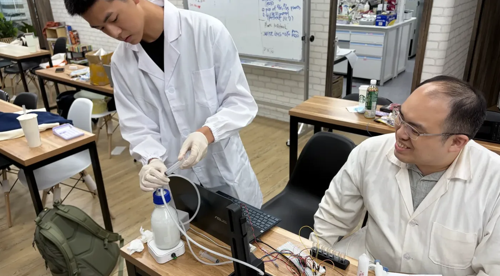
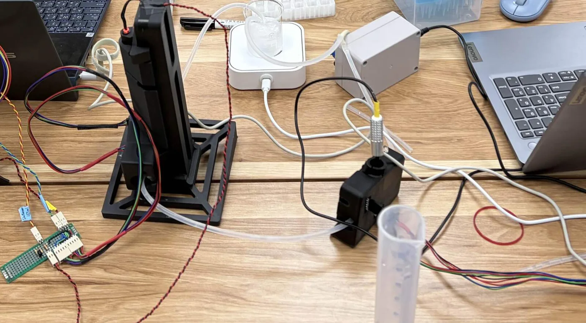
Titanium dioxide, 23 August. Dosed by mass into the loop and read against a BioDrop at every step. The raw, uncalibrated output agrees with the BioDrop to a median paired difference of 3.8% and tracks the mass standard at least as closely as the reference instrument does (R² = 0.9999 against 0.9998). We ran the test twice and the two iterations agree with the reference independently. Two points were excluded on objective grounds and both were BioDrop readings, a handling error in the first run and a monotonicity violation in the second; removing them did not move our own readings at all.
We did not calibrate against the BioDrop, because the runs showed we did not need to. Against the mass standard the BioDrop is the less linear of the two, so fitting to it would tie our readings to that instrument's own errors while we already agree within a few percent.
Silicon dioxide, 10 October. Monodisperse 1 µm microspheres, close to the size of a B. subtilis cell, with both builds in series on one loop and the concentration axis set by the volumes added instead of by any instrument's reading. Because the two sat in series they saw the same suspension at the same instant.
The BioDrop is not a valid comparator over the whole series: above OD600 2 each sample had to be diluted fourfold and multiplied back, which amplifies any pipetting or reading error. Every instrument-to-instrument comparison below is therefore restricted to the 0 to 1 OD window, inside the BioDrop's own specified range.
| Instrument | Fit | R² | Slope, 95% CI |
|---|---|---|---|
| BioDrop | y = 0.0489x + 0.0151 | 0.9956 | 0.0460 to 0.0518 |
| Pro | y = 0.0458x − 0.0636 | 0.9874 | 0.0412 to 0.0505 |
| Slim | y = 0.0086x + 0.0081 | 0.9947 | 0.0080 to 0.0092 |
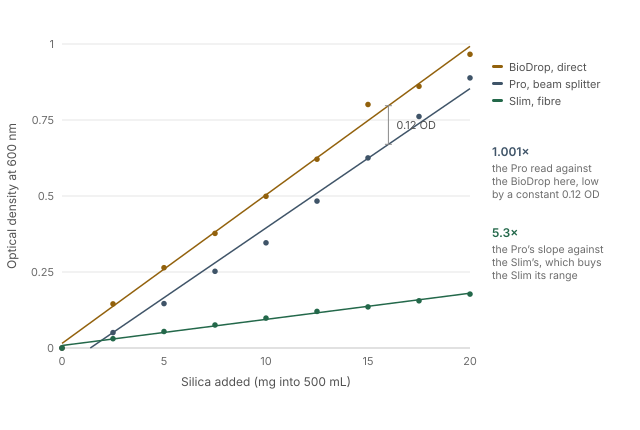
The Pro. Read directly against the BioDrop it gives a slope of 1.001, which reproduces the titanium dioxide result on a different particle. The one difference is a constant offset of about 0.12 OD, intercept −0.123, the Pro reading low at every point.
Both halves of that sentence are testable, so we tested them rather than asserting them. Against a null of unit slope the regression returns t(6) = 0.03, p = 0.98, with a 95% confidence interval of 0.892 to 1.110: the data are consistent with the Pro reading on the BioDrop's scale, and the width of that interval is the honest limit of what eight points can say, namely that the slope is within about 11% of one. Against a null of zero intercept the same regression returns t(6) = −4.38, p = 0.005, 95% CI −0.192 to −0.054, so the offset is not an artefact of scatter. The paired difference says the same thing directly: −0.123 OD, 95% CI −0.150 to −0.095, t(7) = −10.7, p < 0.001. A scale error would have moved the slope and left the intercept alone; this run does the opposite, which is what sends us to the blank rather than to the optics. The fits, the intervals and the figure above are one calculation, recomputed from the workbook by build/measurement_stats.py in our wiki repository.
The offset is additive rather than multiplicative, and the two runs together locate it. Fixed channel differences cancel against the blank and cannot reach the reported OD; the slope is the same across titanium and silicon dioxide while the intercept was effectively zero in the first run and −0.12 in this one, so the optics are unchanged and the blank is what differs. The likely cause is that the loop was not completely clean when the blank was stored, which depresses every later reading by a constant and leaves the slope untouched. That is to be confirmed by re-blanking on a clean loop. No offset correction is applied to any reading on this wiki. Unit slope across two independent standards is what says the Pro needs no calibration transform; the blank-referenced offset is the one item still open.
The Slim. This run is its first validation, since it was built after the titanium dioxide work. Its slope, 0.0086, is about a fifth of the BioDrop's and the Pro's, a ratio of 5.3, and against the Pro it fits a straight line at R² = 0.993. That is a linear rescaling, not a different response shape. It does not read on the BioDrop's scale and is not built to, but its own response is linear at R² = 0.9947, reproducible against the Pro on the same suspension, and related to the reference scale by a single constant rather than a fitted curve: one coefficient, with no curve shape to characterise per instrument. It trades direct scale agreement for range and cost.
Headroom of roughly five times the BioDrop's range follows from that slope ratio, and it is an estimate rather than a measurement: the series was not carried past the points shown, so the Slim's true upper limit still needs a dedicated high-density run.
This is also the run that produced the raw data behind the next section, where the ladder, the working range of each build and the bubble behaviour are reported in full. Further numbers are on the photometer page and under R1 on Digital Twin.
Transmembrane pressure and flowrate meter
Our reactor is meant to be run by a farmer, not a technician, so it has to show what is happening inside it.
Two of the parameters we sense are the most useful for that: the flow rate through the hollow fiber module and the transmembrane pressure across the membrane.
Both work as early warnings. If pressure or flow at a given pump setting drops suddenly, that points to a leak. If TMP climbs while the flow rate stays where it was, cells are most likely sticking, building a cake layer and blocking the fibers (Field et al., 1995), and the module is then washed with an alkaline solution to clear it (Millipore Corporation, 2003).
They also decide how the module is operated. Normally the shell-side valve is closed, so the culture runs parallel along the fibers and sweeps their surface, which is what keeps B. subtilis from settling on them (Millipore Corporation, 2003; Wittig et al., 2025). To collect the protectant we open the shell-side valve and close the pinch valve, which forces liquid across the fiber wall instead of along it: the cells stay inside and the protein they secrete passes through the 0.2 µm pores. That only works while TMP is positive, since TMP is the pressure pushing liquid out through the membrane. We also intend to try driving TMP negative, which would let us pump medium back into the reactor.
Flow also sets the shear the cells meet inside a fiber (Yuen, 2025). At our operating settings it is about 4,000 to 6,000 s⁻¹, which we read as comfortably inside what B. subtilis tolerates. That reading is not settled here, and the one published figure we have found points the other way: B. subtilis grew in a Couette flow bioreactor at up to 1,482 s⁻¹, but the cells shrank to about half their size and intracellular reactive oxygen species rose 9.3-fold (Sahoo et al., 2003). That was a different vessel, so the number transfers only loosely, but until culture viability has been read after circulation at our own dials, the margin is an expectation and not a measurement.
How flow was measured, three ways
First, by hand with no membrane fitted: set the pump dial, catch the outflow in a measuring cylinder over a fixed interval. The pump covers dials 0 to 100 and we tested every tenth, three trials per setting except 70 to 100.
On 14 August we fitted the membrane and read flow and pressure together, still catching the outflow by hand, every second dial from 10 to 24 where we expect to operate: three rounds of three trials.
On 16 August we replaced the hand method with the flow meter, because the hand readings depended too much on who took them. Two configurations ran at the same dials, 10 to 24: a background loop with plain tubing in place of the module and every valve, fitting and cuvette still fitted, and the same loop with the module installed.
The meter is a ZJ-TM02, a Hall-effect type: a magnet in an internal rotor spins with the flow and a fixed sensor emits a pulse each time it passes, so pulse frequency is proportional to flow. Ours gives 2,580 pulses per litre, about 43 Hz per L/min. The microcontroller counts rising edges and ignores any pulse arriving within 0.5 ms of the previous one, which rejects switching noise, and reports the pulse count, the time between the first and last pulse and a running total every second. The software converts to mL/min as pulses / 2,580 × 1,000 per minute.
We validated the meter by reading it and catching the outflow by hand at the same time, and the two agree with R² = 0.995.
How pressure was measured
Pressure is read by three transmitters, Jingfeng BP8G-AGB, on the feed (lumen in), the retentate (lumen out) and the permeate (shell side). Each runs from 12 V and outputs a voltage proportional to the pressure on its sensing element, 0 V at 0 bar to 5 V at 10 bar. The board's analog pins tolerate only 3.3 V, so each signal first passes a 15 kΩ / 22 kΩ divider, which scales 5 V down to about 2.97 V.
The microcontroller reads the three channels 100 times a second, each sample the sum of 16 readings to average out noise, and sends them to the computer in batches every 200 ms. The software converts each count to a pin voltage, undoes the divider and rescales 0 to 5 V onto 0 to 10 bar. The three pressures from the same instant are then combined as TMP = (Pfeed + Pretentate) / 2 − Ppermeate (Millipore Corporation, 2003), and the value reported is the median over a 30 second window.
That is the instrument as it now stands. The August series below predate the permeate channel being logged, so the quantity in those tables and plots is (Pfeed − Pretentate) / 2, a pressure drop along the lumen rather than across the wall. Readings are in psi, converted to bar.
Results
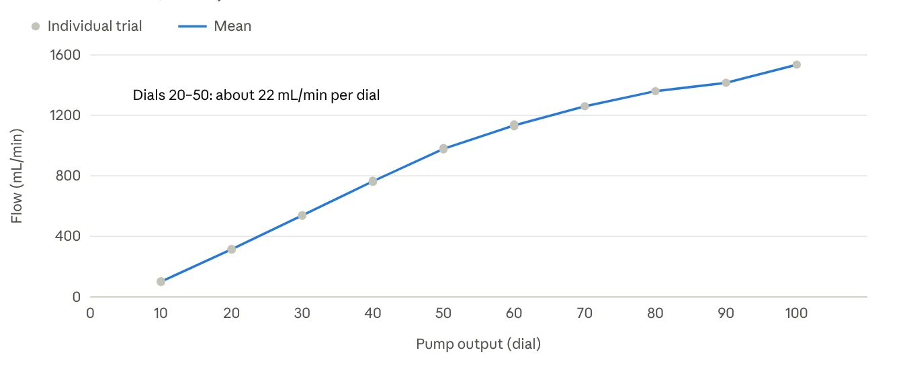
| Pump output | Trial 1 | Trial 2 | Trial 3 | Mean, mL/min |
|---|---|---|---|---|
| 10 | 103 | 100 | 98 | 100.3 |
| 20 | 315 | 312 | 315 | 314 |
| 30 | 536 | 540 | 538 | 538 |
| 40 | 760 | 764 | 768 | 764 |
| 50 | 978 | 975 | 984 | 979 |
| 60 | 1131 | 1140 | 1128 | 1133 |
| 70 | 1260 | not run | not run | 1260 |
| 80 | 1360 | not run | not run | 1360 |
| 90 | 1415 | not run | not run | 1415 |
| 100 | 1535 | not run | not run | 1535 |
From flow to shear rate. With a 0.1 cm fiber inner diameter and 11 working fibers, the wall shear rate follows from flow alone:
γ̇w = 32Q / (πd³n) ≈ 15.4 × Q (mL/min) s⁻¹
(Bird et al., 2007; Yuen, 2025). Dial 10, about 100 mL/min, is therefore about 1,500 s⁻¹ and dial 20, about 314 mL/min, about 4,800 s⁻¹, so the 4,000 to 6,000 s⁻¹ band sits at roughly 260 to 390 mL/min. Across that range the Reynolds number stays near 700 to 1,100, well below 2,100, so the flow is laminar and the formula holds.
The three 14 August series in full all three runs, with their tables and plots
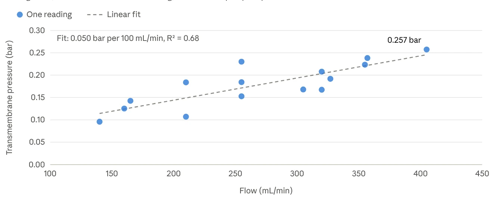
| Output | mL/min | psi |
|---|---|---|
| 10 | 140 | 1.390 |
| 12 | 160 | 1.817 |
| 12 | 165 | 2.067 |
| 14 | 210 | 1.553 |
| 14 | 210 | 2.666 |
| 16 | 255 | 2.214 |
| 16 | 255 | 3.3365 |
| 16 | 255 | 2.673 |
| 18 | 327 | 2.781 |
| 18 | 305 | 2.436 |
| 18 | 320 | 3.0136 |
| 18 | 320 | 2.427 |
| 20 | 355 | 3.239 |
| 20 | 357 | 3.455 |
| 22 | 405 | 3.732 |
The fit on this series is 0.050 bar per 100 mL/min with R² = 0.68. For laminar flow the pressure drop rises in proportion to flow (Hagen–Poiseuille; Bird et al., 2007), so that slope is the resistance of the flow path. Once a clean-module baseline is fixed, a reading more than about 1.3× the baseline at the same flow is the blockage warning and a reading clearly below it points to a leak or a bypass. This series is too scattered to be that baseline.
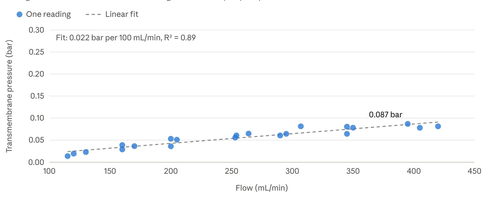
| Output | mL/min | psi |
|---|---|---|
| 10 | 115 | 0.2003 |
| 10 | 120 | 0.2825 |
| 10 | 130 | 0.3339 |
| 12 | 170 | 0.5282 |
| 12 | 160 | 0.4203 |
| 12 | 160 | 0.5633 |
| 14 | 200 | 0.5225 |
| 14 | 200 | 0.7708 |
| 14 | 205 | 0.7393 |
| 16 | 253 | 0.8101 |
| 16 | 264 | 0.9423 |
| 16 | 254 | 0.8818 |
| 18 | 307 | 1.1805 |
| 18 | 290 | 0.8807 |
| 18 | 295 | 0.9339 |
| 20 | 345 | 0.9324 |
| 20 | 350 | 1.1345 |
| 20 | 345 | 1.1684 |
| 22 | 395 | 1.26 |
| 22 | 420 | 1.1794 |
| 22 | 405 | 1.1339 |
Series 2 stays between 0.01 and 0.09 bar across 115 to 420 mL/min and is positive throughout, so filtrate is being pushed out of the lumen, which is the mode we want (Millipore Corporation, 2003). Its low slope, 0.022 bar per 100 mL/min, and tight fit, R² = 0.89, make it the best candidate for the clean baseline.
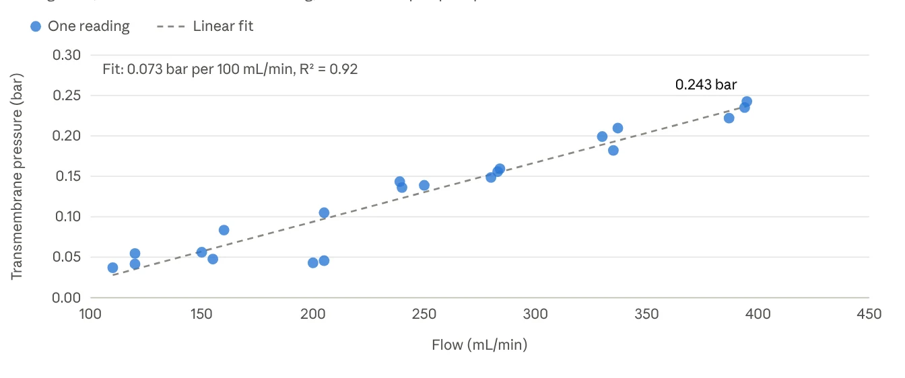
| Output | mL/min | psi |
|---|---|---|
| 10 | 110 | 0.537 |
| 10 | 120 | 0.7915 |
| 10 | 120 | 0.604 |
| 12 | 150 | 0.8135 |
| 12 | 155 | 0.6915 |
| 12 | 160 | 1.2115 |
| 14 | 205 | 0.6635 |
| 14 | 200 | 0.624 |
| 14 | 205 | 1.5225 |
| 16 | 250 | 2.0139 |
| 16 | 239 | 2.0808 |
| 16 | 240 | 1.9742 |
| 18 | 280 | 2.155 |
| 18 | 284 | 2.3113 |
| 18 | 283 | 2.2592 |
| 20 | 337 | 3.0403 |
| 20 | 330 | 2.8888 |
| 20 | 335 | 2.6403 |
| 22 | 394 | 3.4089 |
| 22 | 395 | 3.518 |
| 22 | 387 | 3.219 |
Series 3 climbs at 0.073 bar per 100 mL/min and reaches 0.24 bar at 395 mL/min, about 2.8× series 2 at the same flow and far past the 1.3× alarm. On a run rather than a calibration, a jump like that should also show pressure-based shear, τw = ΔP·d / 4L, which needs no fiber count (Bird et al., 2007), running ahead of flow-based shear. That divergence is how a blocked fiber is told from a change in pump output.
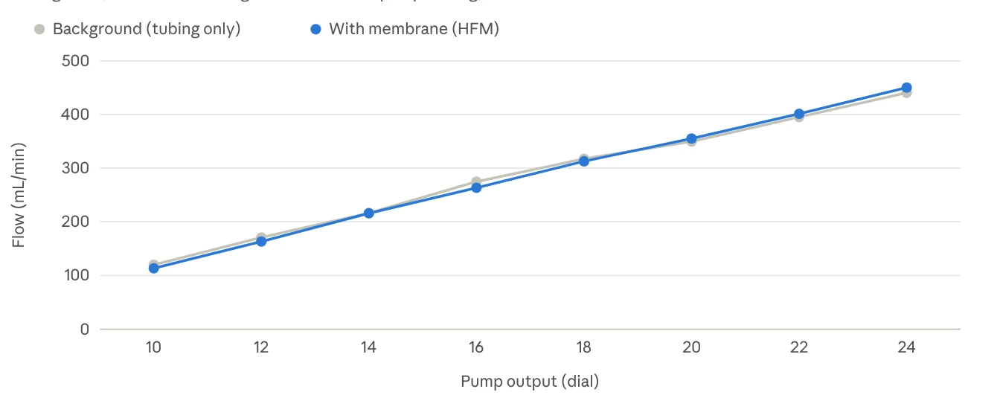
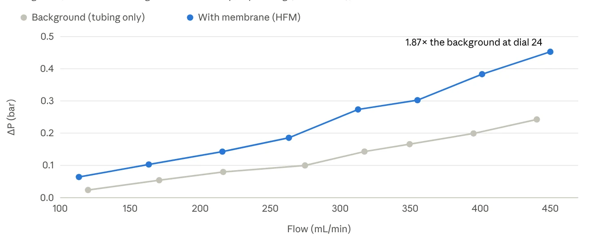
| Pump output | Background | With the module | ||||
|---|---|---|---|---|---|---|
| Q | psi | bar | Q | psi | bar | |
| 10 | 119.878 | 0.3434 | 0.02367 | 113.368 | 0.9278 | 0.06397 |
| 12 | 170.724 | 0.7844 | 0.05408 | 163.282 | 1.4939 | 0.10300 |
| 14 | 216.416 | 1.1561 | 0.07971 | 215.850 | 2.0711 | 0.14279 |
| 16 | 274.849 | 1.4498 | 0.09996 | 263.323 | 2.6928 | 0.18566 |
| 18 | 317.333 | 2.0736 | 0.14297 | 312.731 | 3.9687 | 0.27363 |
| 20 | 349.582 | 2.4054 | 0.16585 | 355.193 | 4.3871 | 0.30248 |
| 22 | 395.225 | 2.8877 | 0.19910 | 401.328 | 5.5576 | 0.38318 |
| 24 | 440.428 | 3.5203 | 0.24271 | 450.065 | 6.5660 | 0.45271 |
The 16 August series is the one to build on. Subtracting the background leaves the module's own contribution, 0.04 bar at dial 10 rising to 0.21 bar at dial 24, and the two flow columns agree within a few per cent at every setting, which is what the meter was brought in to fix.
Note what the figure is not. The quantity in these tables is (Pfeed − Pretentate) / 2, a pressure drop along the lumen. Transmembrane pressure needs the permeate reading as well, and the permeate channel is not in these tables, so no TMP has yet been computed from this rig and whether it stays positive at a working dial is still open.
Conclusion
Flow and pressure can be measured reliably enough to act on. The flow meter matches manual measurement with R² = 0.995, and flow rises by about 22 mL/min per pump dial up to dial 50. The 4,000 to 6,000 s⁻¹ shear band we work to corresponds to 260 to 390 mL/min, or roughly dials 16 to 22, which is where the reactor is run.
That is enough to set the two alarms the farmer actually needs. A leak shows as a sudden drop at a fixed dial, well below the flow normally seen there, which is about 355 mL/min at dial 20. A blockage shows as pressure rising while flow does not move: with the module installed the drop runs about 0.19 to 0.37 bar across 260 to 390 mL/min, so we propose flagging anything above roughly 1.3 times that, about 0.24 to 0.48 bar, at the same flow. Both are thresholds proposed from these calibration runs; neither has yet fired on a real fault.
What the two readings still owe is a TMP. Every pressure figure in this chapter is the lumen drop, and the 14 August series stayed positive across 0.01 to 0.26 bar, which is consistent with filtrate being pushed out of the lumen but does not demonstrate it, because the permeate reading is not in those files. The permeate channel is now logged and the formula is in the software, so the next run on this module can close the one gap this chapter leaves open.
Hollow fiber membrane breach detector
The hollow fiber is where the culture and harvest stream touch, and a 0.2 µm pore is what keeps B. subtilis on the lumen side. If breached, the cells would be able to come through, so a detector is installed on the shell side to watch for signs that may indicate unwelcomed particles.
Fitted, but no breach test is on record. It currently rests on an offline proxy that was run once. During version 1, 2 mL was drawn from the shell side and spread on LB agar, and no colonies were recovered, so no culturable B. subtilis reached the shell side in that run. It is a single plating, and the replicate count, incubation time and incubation temperature were not recorded.
![Above, a cutaway of the hollow fibre module: culture enters the fibre lumens at the feed port on the left and leaves at the retentate port on the right, drawn in amber; the shell space around the fibres is tinted blue and drains through a permeate port at the bottom. Green ovals, the cells, stay inside the fibres while small blue dots, secreted protein, cross the 0.2 micrometre wall into the shell. Dashed lines run down from the lumen side to plate a and from the shell side to plate b. Below, the two plates: a is streaked with colonies, b is clear.](../assets/img/measurement/hfm-lumen-shell.webp)
No detectable B. subtilis colonies were observed in the shell-side sample under the tested conditions. This provides preliminary evidence that the hollow-fiber membrane retained bacterial cells during the tested run.
What this plate can carry is a containment claim for one run; it cannot stand in for the detector, because a plate takes a day to answer and an instrument has to answer while the reactor is running. The build is on Hardware → Bioreactor and the containment argument it belongs to is on Safety.
Software algorithm calibration
An OD600 reading is not a measurement until you know what the arithmetic between the light and the number did to it. This assay opened our own photometer firmware, derived the bias of every step in it, and then measured those biases against a scatterer that does not grow.
The four other families on this page calibrate instruments against standards. This one calibrates the software that turns a sensor into an instrument. It began because our longest culture to date returned a curve we could not defend, and it ended with a configuration change to the bioreactor, a pre-registered decision rule, and a raw data set complete enough for another team to replay on their own photometer.
What the instrument had already recorded
Our 434-hour culture produced a curve full of steps. The steps were not in the culture. They were in the reference channel, and the log had been carrying the evidence all along.
Between 21 July and 8 August the inline photometer ran continuously and wrote 2,671 valid readings. We reopened that log and looked only at the reference channel, the sensor on the 10% tap that never crosses the medium. It sat at about 32 sensor counts for the whole run. A detector resolves whole counts, so the fewer counts a channel carries, the more optical density a single count is worth: at 32 counts and our path-length factor of 5, one count moves the reported OD600 by 0.067.
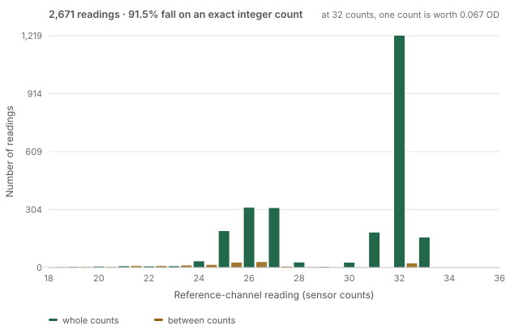
The firmware takes sixteen samples per reading and averages the ones that survive an outlier gate. If that averaging were working, the results would spread between the integers. Instead 91.5% of them sit exactly on an integer. The sub-count resolution that averaging is supposed to buy was being thrown away before it reached the log.
The second figure is the consequence. Across the quiet stretch from hour 40 to hour 230 the reference channel changed count 29 times, and 26 of those changes arrived with a jump in reported OD600 larger than 0.04. Those jumps belong to the instrument. A culture does not step.
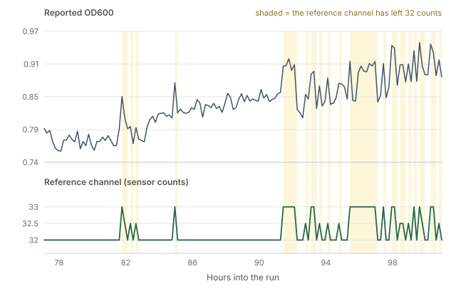
Reading the firmware explained the first figure. The outlier gate keeps samples within three median absolute deviations of the median. When more than half of sixteen samples carry the same integer, the median absolute deviation is zero, so the fence has zero width and every sample that differs from the median is discarded as a bubble. The filter collapses into taking the most common count. Our firmware offers two further estimators in its interface, qn and biweight, and all three share a scale floor of 10−6, so on quantised data all three do the same thing. The rejection percentage the dashboard had been reporting as "bubbles" was, in that regime, counting quantisation flicker.
The hypothesis
Every step between the light and the number carries a bias whose direction and size can be written down before anything is measured. We derived six of them: resolution lost at the sensor (ΔOD ≈ 0.434 k/N), the gap between averaging and taking the logarithm (0.217 kσr2), one-sided occlusion by bubbles, the degenerate outlier gate above, a stray-light ceiling at −k log10(s), and the delay a smoother adds. The sharpest prediction fell out of the third: if bubbles only block light, then an estimator that trusts the brighter half of each burst should scatter far less than a symmetric one. That prediction is what the calibration run was built to overturn or confirm.

One data set, eleven algorithms
The design fits in a sentence: record the raw samples once, then replay every algorithm on those same samples offline. Any difference between two algorithms is then a difference in arithmetic and nothing else.
Comparing estimators by switching the firmware between them does not work, because each estimator then sees a different burst and the comparison carries burst-to-burst randomness. So the first change was to the firmware itself: version 1.2.0 writes the individual samples inside every burst, logs all eight estimators on every reading, and records which profile was active in an alg_profile column. With that in place, one run feeds every algorithm identical input.
Eleven algorithms, and why seven of them are controls
Four are the estimators already selectable in our firmware. The other seven exist to bound the answer from both sides. A plain mean and a median are the naive baselines any team would reach for. The log-then-mean algorithm is a deliberate negative control: theory says it must read high by 0.217 kσr2, so if the replay does not reproduce that offset, it is the replay that is wrong and not the algorithm. The percentile band and the mean of paired ratios test two specific ideas, one about bubbles and one about a flickering source. And mad with its scale floor raised to one count is the single-variable control on the degeneracy above: it differs from the shipped estimator in exactly one constant.
| ID | Method | Role |
|---|---|---|
E-1 mad | Mean of samples within median ± 3×MAD, MAD floor 10−6 | Shipped default on the bioreactor |
E-2 qn | Qn as the scale estimate, otherwise as E-1 | Firmware option |
E-5 biweight | Tukey biweight, soft down-weighting | Firmware option |
E-3 upper | Mean of the samples at or above the median | Firmware option; the one that bets on bubbles only darkening |
| C1 | Plain mean | Naive control; lowest noise when nothing goes wrong |
| C2 | Median | Naive robust control |
| C3 | 20% trimmed mean | Intermediate between C1 and C2 |
| C4 | 60th to 90th percentile band on the sample channel | Candidate for the bubble case |
| C5 | Logarithm of each sample, then the mean | Negative control with a predicted bias of 0.217 kσr2 |
| C6 | Mean of the per-sample sample-to-reference ratios | Tests whether pairing beats averaging when the source flickers |
| C7 | E-1 with the MAD floor set to one count | Single-variable control on the degenerate gate |
Written down before the data existed
A comparison chosen after seeing the results is not a comparison. The algorithm list above, the five metrics, the selection rule and eight numbered predictions were committed to our repository before the first measurement, and the commit timestamp is the evidence that the plan preceded the data. The metrics are bias against the line through the lowest third of the ladder, repeatability as the standard deviation of bursts at one level, a limit of detection at three times the blank standard deviation and a limit of quantification at ten times, the highest level at which bias stays within 5%, and hysteresis between the ascending and descending passes. The rule: among algorithms holding bias within 5% in every arm across the validated range, adopt the one with the lowest repeatability under bubbles; on a tie, the simplest. Results for all eleven are published whichever is chosen.
The exclusion rule was fixed in the same file, and it is narrow on purpose. A burst is excluded only for a logged I²C failure or a logged operator error. Nothing is excluded for looking wrong.
The code
Two scripts carry the analysis. firmware_estimators.py is a line-for-line port of the four estimators in firmware v3.10.9, including the scale floor, so the behaviour under test is the behaviour that ships, not a description of it. replay_algorithms.py runs one raw data set through all eleven, and its --selftest flag runs the whole chain on synthetic data with known answers, which is how we check the replay before pointing it at real measurements. Both sit with the raw CSVs and the pre-registration in the team repository on the iGEM GitLab.
| # | Prediction | Threshold to pass |
|---|---|---|
| H1 | The benchtop reference agrees with single-scattering theory at low concentration | Slope within 1.8–2.8 OD·mL/mg |
| H2 | Direct benchtop readings fall low at high concentration; diluted readings stay on the line | At theoretical OD ≥ 2, direct more than 10% below the diluted value |
| H3 | The inline builds read below the benchtop, because a short path and a near detector collect more forward scatter | Slope within 0.6–1.0 |
| H4 | The fibre build has a higher slope and a wider linear range than the beam-splitter build | Higher slope and a 5% departure point no lower |
| H5 | In clean flow the four firmware estimators return one and the same OD | qn and biweight within 0.01 of mad, upper within 0.02 |
| H6 | With bubbles, upper scatters far less than the symmetric estimators | SD(upper) ≤ ½ SD(mad) in at least two of three challenges |
| H7 | With bubbles, mad, qn and biweight still cannot be told apart | SDs within a factor of 2, means within 0.05 |
| H8 | The upward bend seen on 19 September was not caused by the photometer | Inline against benchtop slope ratio within 0.95–1.05 |
The silica run, and what it overturned
Separating instrument bias from biology needs a scatterer that does not grow, change shape or die. On 10 October we ran one for four and a half hours and logged every sample it produced.
The standard, and where the units come from
The ladder is built from monodisperse silicon dioxide microspheres (Tomicro, mean diameter 1 µm, stock 25 mg/mL), close to the size of a B. subtilis cell and stable over the length of a run. Forty-one concentrations were made by the withdraw-one, add-one protocol, so the concentration at step n follows from the volumes alone:
Cn = Cstock × [1 − ((V − 1)/V)n]
That matters more than it looks. The concentration axis of this calibration is defined by pipetted volumes and a measured hold-up of 50 mL, not by any instrument's reading. The benchtop BioDrop is in the loop as a third opinion on the same liquid, not as the truth; two of the eight predictions, H1 and H2, exist to check the referee before the referee is used.
Two photometer builds ran in series on one loop: V1, the Pro beam-splitter build described in the bioreactor section, and V2, the simplified fibre build, the Slim. One reading every 5 s, all eight estimators logged on every reading, raw bursts written to disk. As an arithmetic control, dropping the first two samples of each burst, subtracting the dark level, estimating each channel and then taking the ratio reproduces all eight logged OD columns from the raw bursts to within 0.005 OD, which is how we know the replay is doing what the firmware does.

In clean flow the estimator is not the lever
Across the forty concentrations with the loop running clean, the largest gap between any two of the eight estimators was 0.0039 OD on V1 and 0.0018 OD on V2. The residual scatter of our own August calibration was 0.024 OD, so in clean flow the choice of estimator is worth less than a fifth of the noise. H5 held. Everything that had been argued about in the interface turned out not to matter when nothing goes wrong.
With bubbles the premise fails
H6 predicted that upper, which trusts only the brighter half of each burst, would scatter at most half as much as mad. It scattered 0.77 against 0.78 on V1 and 0.15 against 0.16 on V2, and on V1 its mean error was twice that of mad. The reason is visible in the raw bursts: a bubble does not only block light. On V1, at OD 3.2, a bubble replaces a slice of scattering liquid with air and up to 2.8 times more light arrives; on V2, whose fibre collects over a wide angle, a bubble refracts light out of that cone and the reading darkens. The two units disagree in direction, so any estimator that assumes a direction is betting on the geometry it happens to be sitting in. No estimator put more than 35% of bubble readings within ±0.05 of the true level.
Worse, the firmware's own bubble flag catches the wrong failure. When the fourteen samples in a burst disagree, the flag fires on 94% of them on V1 and 79% on V2. That makes the failure detectable, if not correctable. When the flow cell fills completely with air the fourteen samples agree perfectly and are all wrong together: V1 read 0.74 to 0.91 against a true 3.18, and the flag caught none of it. Nothing inside such a burst looks abnormal. Only a comparison with the previous reading reveals it.
The lever is the gate after the estimator
We replayed the same data at the bioreactor's 30-second cadence through five reporting pipelines, from the configuration that was running on 10 October to one with two gates added: a spread gate that rejects a reading when mad and the 90th percentile disagree by more than 0.03 OD, and a jump gate that holds back any reading more than max(0.05 OD, 5%) from the last accepted value and accepts a new level only after three agreeing readings.
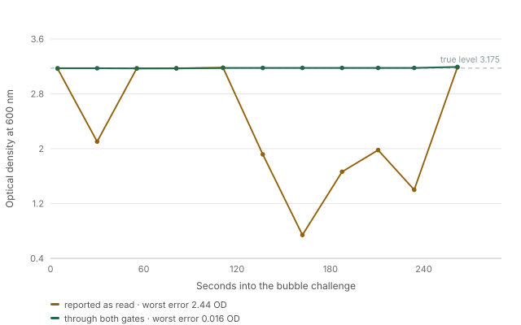
The reference channel, measured against a real disturbance
Partway through the run someone touched the fibre or the source and both of V2's channels fell together to 0.6 of their brightness. Dual-channel OD drifted −0.0005 OD per minute across that plateau while sample-only OD drifted 0.025, so on V2 the reference does the job it was built for. On V1 it does not: the fraction of a reference change that reaches the sample channel runs from −1.2 to 0.97 with a median near 0.3, and in a 24-minute hold the dual-channel reading moved further than the sample channel alone would have. The two sides of that beam splitter are not seeing the same light. Within plateaus V1 drifts up to 0.015 OD per minute while V2, on the same liquid at the same moment, shows 0.0000.
Three predictions held, five failed
Both numbers are reported. The failure that matters is H6, because it was the premise the shipped estimator was chosen on. Two thresholds in the gates were set on the data that produced them, the spread threshold of 0.03 OD having come from the largest spread among clean readings. The next bioreactor run is their out-of-sample test, with the thresholds frozen in the pre-registration before it starts. The jump threshold and the three-reading rule were fixed beforehand and not tuned.
What changed on the reactor
The assay was run to settle a configuration, and it settled one. Seven changes went to the next bioreactor run, each with the measurement that justifies it.
| # | Setting | Evidence |
|---|---|---|
| 1 | Burst estimator back to mad, and re-take the blank after switching | Within 0.004 of the other seven in clean flow, among the quietest on V2, and symmetric, so it does not bet on which way a bubble goes |
| 2 | Spread gate: firmware flag, or mad and the 90th percentile apart by more than 0.03 OD, means the reading is not used | Catches 97% of bubble readings on both units while rejecting no clean readings, and under 0.6% of valid readings over the whole run |
| 3 | Jump gate: a reading more than max(0.05 OD, 5%) from the last accepted value is held back; a new level needs three agreeing readings and raises an alarm | The only thing that catches an air slug. Worst bubble-test error 2.44 → 0.016 OD on V1 and 0.28 → 0.003 on V2 |
| 4 | Report the median of the last three accepted values, a 90-second window at this cadence | Growth happens over hours. Worst steady-state error on V2 falls from 0.069 to 0.008 OD |
| 5 | Log raw bursts, all eight estimators and every gate decision; the reported value never overwrites the data | This entire analysis was possible only because the firmware kept all of it |
| 6 | For long runs the fibre build is the primary unit; the beam-splitter build in series is a high-resolution secondary | V2's reference removes a 40% source change; V1's adds drift of up to 0.015 OD per minute within a plateau |
| 7 | Fix the inlet below the surface, add a bubble trap, keep the inlet clear of the stirring vortex | A gate can reject a bad reading but cannot replace it. Every bubble avoided is a gap avoided |
The next run was the test, and it has now run
The silica work finished on 10 October and the gate went onto the rig on 14 October. The bioreactor run that started that day, B. subtilis WB800 secreting ACC deaminase from the constitutive promoter, is therefore the out-of-sample test the pre-registration asked for. It is also the latest run this reactor has done.
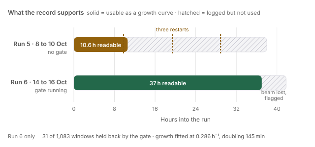
| Run 5, 8 to 10 Oct | Run 6, 14 to 16 Oct | |
|---|---|---|
| Acceptance gate | not fitted | running |
| Logged | 37.5 h over 38 h, in four files after three restarts | 41.8 h continuous, no restart |
| Readable as a growth curve | the first 10.6 h | to 37 h |
| Windows over 20% bubbles | about one in six | none |
| Reference channel | moved by a factor of 4.8 across the run | held within 17% |
| Readings held back | no gate to hold them | 31 of 1,083, under 3% |
| What it supports | 0.10 to 0.30, then nothing | 0.14, then 1.01 at 7 h and 2.71 at 37 h; growth fitted at 0.286 h−1 over 1.5 to 6.5 h, a doubling time of 145 minutes |
Two things changed between those runs, not one. The permeate draw was halved from 24 to 12 mL/min at the same time as the gate went on, and a slower draw pulls in fewer bubbles, so the clean bubble record cannot be credited to the gate alone. What belongs to the gate by itself is narrower: 31 readings held back instead of published, and the end of the run called correctly.
That last part is what the silica run predicted. At 37 hours the sample beam fell to a tenth of the reference and the reported value stepped to about 9.9 and stayed there. Nothing inside those bursts looks abnormal, which is exactly the failure the 10 October data identified as invisible to the firmware's own bubble flag: a steady, wrong reading that only a comparison with the previous value can catch. The gate caught it, marked the stretch as low signal, and the twin does not use it. Without the gate, four hours of a dead optical path would have entered the record as a culture at OD 9.9.
An anti-His blot of samples drawn between 14 and 44 hours separates lumen cell lysate, lumen medium and shell medium and puts a band at the size the construct predicts, which is the compartment time course reported on Results. The optical record underneath it is usable only because a reading that had stopped meaning anything was marked as such instead of published.
What another team gets
The raw CSVs from both units, both bubble tests, the hand-written log sheet, the eleven-algorithm replay script, the line-for-line firmware ports and the pre-registration are published with our software at gitlab.igem.org/2026/software/gems-taiwan/digital-twin, under od600-signal-processing/. The protocol runs in four working days on any photometer that can be made to log its raw samples, and the one change that makes it possible, printing the individual samples inside a burst instead of only their summary, is a single flag in most firmware.
What this calibration does not establish
Silica calibrates the instrument, not the organism. A 1 µm bead is a sphere of refractive index 1.46 and density 2.3 g/cm³; a vegetative B. subtilis cell is a rod, often in chains, nearer 1.33 to 1.41 and 1.1 g/cm³. The ladder therefore converts a reading into equivalent particle counts and not into cell mass, and a dilution series of washed cells is still owed before the two can be related. The gates have a stated limit of their own: when an air slug lasts longer than 90 seconds, three agreeing readings make the wrong level acceptable. That is why line 3 above raises an alarm instead of silently correcting: a growing culture does not move 0.05 OD in 30 seconds, so any accepted step that large deserves a human look. On 10 October the real cause was an inlet tube that had fallen out of the beaker, and one alarm would have had someone put it back inside the first minute.
Optogenetic control
Can the light plate deliver a controlled signal for optogenetic activation? ReLEAF depends on light as the external control signal connecting environmental prediction to biological production. We therefore tested the light plate to determine whether it could provide reproducible illumination across the culture area.
A predicted environmental condition is turned into a light input that tunes production of ACCD in B. subtilis through the CcaSR red and green light-sensing system (Castillo-Hair et al., 2019). For that to work, light has to act as a reliable dial. We need to know whether low, medium and high intensities give clearly separated levels of ACCD expression, and whether the light itself affects cell growth. The Light Plate Apparatus is an open-hardware, 24-well platform with independently programmable LEDs in every well (Gerhardt et al., 2016), so several intensities of red and green can run side by side in one experiment on one culture. Following the established CcaSR protocol for B. subtilis (Haller et al., 2025), we track the response over time with OD600 and Western blot. The settings that give a reproducible, graded response become the intensity levels ReLEAF uses to control ACCD production, and because every conclusion depends on the plate, the plate is what we characterized first.
What the measurement contributes
The Light Plate Apparatus is a general platform for characterizing light-inducible gene expression, not a CcaSR instrument. A team can survey light-responsive genetic modules beyond CcaSR and fit LEDs matched to each module's activating wavelength, which turns the same plate into a characterization tool for a wide range of optogenetic systems. What we add is the step before that: a worked method for matching cheap single-bulb LEDs by measured output, so the wells in one column receive the same light and the columns differ from one another by a measured amount.
The harder question for a team starting out is which LED to buy. Below is the survey we ran when we were choosing ours, mapping the common light-responsive systems onto the LED peaks that actually drive them. The wavelengths are the published action peaks; the notes are where a cheap off-the-shelf part will and will not do.
| Band | Systems | LED peak | Notes |
|---|---|---|---|
| UV-A, violet | UirS/UirR, caged inducers | 365, 395 to 405 | A 405 nm LED covers the UirS Pv peak at 396 nm. Watch for phototoxicity and DNA damage (Ramakrishnan & Tabor, 2016; Gerhardt et al., 2016) |
| Royal blue | EL222, CRY2/CIB1, Magnets, YF1/FixJ | 450, 465 to 470 | LOV and FAD absorbance peaks near 450 nm; 470 nm still works at slightly lower efficiency. CRY2 work often uses 461 nm pulses (Ohlendorf et al., 2012; Motta-Mena et al., 2014; Kennedy et al., 2010) |
| Blue to green | LitR / LiEX | anywhere 450 to 530 | The adenosylcobalamin absorption band is broad, so the wavelength choice is forgiving (Noya et al., 2024) |
| Green | CcaS/CcaR, CarH | 525, 530 to 535 | The CcaS Pg peak is 535 nm; the P. putida toolbox uses 530 nm (Hirose et al., 2008; Chatelle et al., 2018; Kainrath et al., 2017) |
| Red | Cph8, pREDawn, PhyB, CcaS off | 630, 660, 670 | CcaS off peaks at 672 nm, so 660 to 670 nm is the closest match. 630 nm is less efficient but common in off-the-shelf devices (Hirose et al., 2008; Multamäki et al., 2022) |
| Far red | PhyB dissociation, BphP1 reversal | 730 to 740 | PhyB Pfr to Pr uses 740 nm. Note that BphP1's off state sits at 640 nm, in the red, not the far red (Levskaya et al., 2009; Beyer et al., 2015) |
| Near IR | BphP1 / PpsR2 | 760 to 780 | Best penetration depth, which suits dense cultures and work in vivo. The host supplies biliverdin, so no chromophore has to be added (Ong et al., 2017; Bugaj & Lim, 2019) |
Matching the LEDs before trusting the plate
Internal resistor variance is a common problem in cheap, single-bulb LEDs. By individually measuring the lumen output value of each LED, we were able to determine which of them have matching internal resistance. Upon finding these similarities among our purchased LEDs, we are able to form 3 groups of 4 LEDs to form columns within our LPA structure for each wavelength we use (we use 2). This will allow us to use mathematical calculations to recalibrate all of the columns of lumens to match, so that we can later create low, medium, and high intensity light to create variance for our B. subtilis protectant production testing.
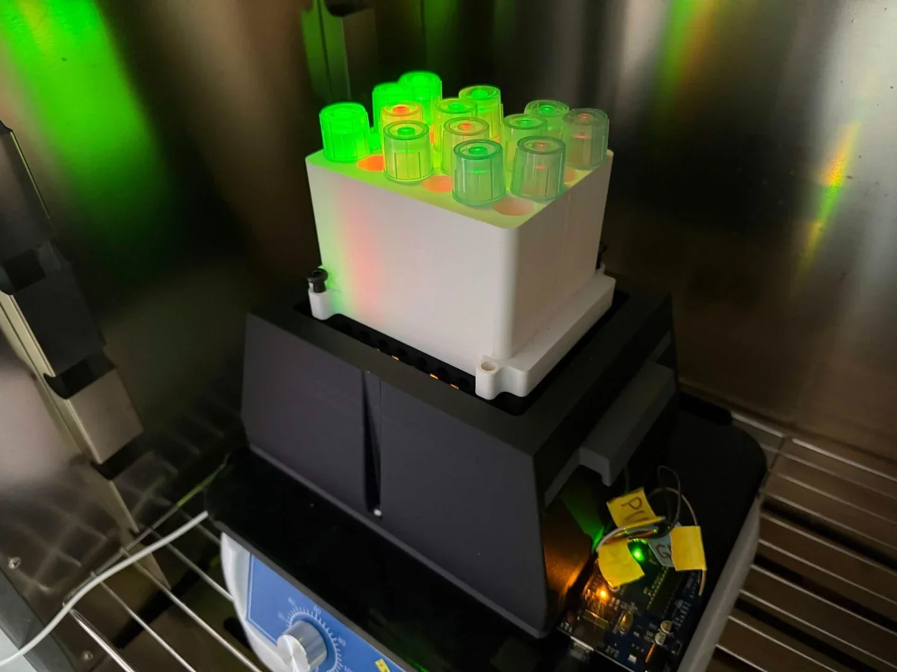
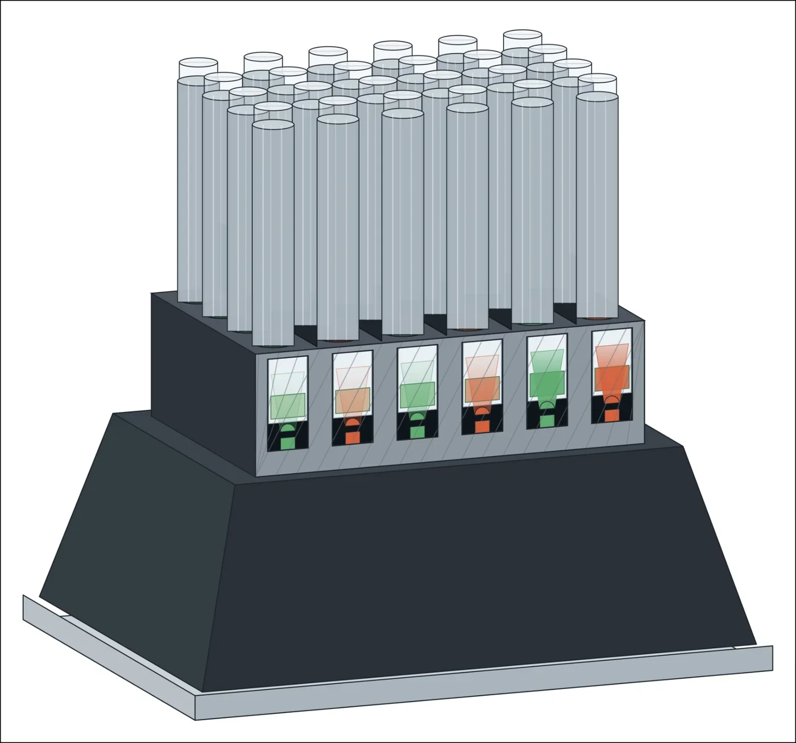
Experiment procedure twelve tubes, five sampling points, under minimal light
- Prepare LB media, 2 mL per tube in each well. Mix thoroughly.
- Prewarm the media to 37 °C.
- Inoculate the LB with B. subtilis WB800 + CcaSR culture. No prior dilution is needed since the culture is already at low density.
- Aliquot 2 mL of the culture into each of the twelve tubes.
- Place each tube in its position in the 24-well LPA plate, following the plate map. The remaining slots stay empty.
- Secure the plate to the LPA device.
- Start the light program, incubate at 37 °C, shaking, for 8 to 10 hours total. Set each column to its colour and light lux level listed in the plate map.
- Every 2 hours, and again at the 24 hour mark, take the plate off the LPA under minimal light. From each of the 12 tubes take 200 µL: 100 µL for OD600 and 100 µL for Western blot. Return the plate to the LPA.
- Keep the samples covered from ambient light and run the assays immediately upon removal. CcaSR responds to light extremely fast, only taking seconds to minutes.
Plate map. Six columns alternate red and green. Red is in columns 1, 3 and 5 and green in columns 2, 4 and 6, each colour at a weak, a medium and a high level in the same intensity ratio. The green levels are 220, 510 and 3850 lux. The weak red is 168 lux; scaled by the green ratio, the other two are about 390 and 2,940 lux, which are calculated and not measured. Each column carries CcaSR cultures and the remaining wells stay empty.
Results
The five sampling tables are combined here into one, by sampling time. The background column is the blank read at that time point; the three values in each green cell are the three tubes at that intensity, and the three red values are one tube at each red level, weak, medium and high.
| Time | Background | Red, weak / medium / high | Green 220 lux | Green 510 lux | Green 3850 lux |
|---|---|---|---|---|---|
| 2 h | 0.061 | 0.108, 0.108, 0.103 | 0.118, 0.089, 0.111 | 0.109, 0.115, 0.109 | 0.106, 0.108, 0.103 |
| 4 h | 0.059 | 0.115, 0.114, 0.120 | 0.122, 0.123, 0.119 | 0.123, 0.149, 0.126 | 0.121, 0.119, 0.120 |
| 6 h | 0.057 | 0.188, 0.194, 0.201 | 0.412, 0.383, 0.195 | 0.285, 0.195, 0.208 | 0.295, 0.188, 0.209 |
| 8 h | 0.059 | 0.251, 0.244, 0.256 | 0.293, 0.237, 0.250 | 0.290, 0.284, 0.259 | 0.269, 0.280, 0.269 |
| 24 h | 0.059 | 1.026, 0.969, 1.026 | 1.056, 1.083, 1.081 | 1.059, 1.008, 1.036 | 1.000, 1.020, 1.031 |
Through the first 8 hours the plate behaves: every column leaves the blank behind together, and growth does not track the green intensity, which is what a light plate should show when the light is a signal and not a nutrient. By 24 hours every tube reads between 0.97 and 1.08, red and green alike. The run has not been repeated.
The Western blot that accompanies these samples was run in two films, in the lane order LPA 0, G100 at 2, 4, 6 and 8 h, G12 at 2, 4, 6 and 8 h, and LPA 0, G2 at 2, 4, 6 and 8 h, R100 at 2, 4, 6 and 8 h. Both have since been re-read. The signal is faint at 0 h throughout. Green 100 carries a moderate band from 2 h that holds roughly constant to 8 h; green 12 is faint at 2 h and strongest at 8 h; green 2 stays weak until 6 h and rises at 8 h; red 100 shows a band from 2 h that is strongest at 8 h.
Expression therefore rises with time under green light but does not order itself by intensity, which is the opposite of what a usable dial has to do, and red at full power is not silent. The bands also run near the 63 to 75 kDa markers, while the secreted ACCD construct runs at about 37 kDa on the constitutive blot in the next section, so their identity is not settled by size alone. The scans and that argument are reproduced on Results; no expression claim rests on them here.
Plant assays
Four measurements share two growing platforms. The agar assay sets the stress and the dose on a flat surface; the hydroponic assay puts the same protectants in front of a root system standing in liquid. The chlorophyll extraction reads how much photosynthetic machinery survived either one, and the physical measurements give the root length and the fresh weight that every chlorophyll number is normalised against.
Agar plate stress test, horizontal and vertical
To know whether a protectant rescues a stressed plant, and whether the timing of the dose matters, we needed a platform where the stress dose, the protectant and the timing could each be changed one at a time. Arabidopsis thaliana seedlings on ½ Murashige and Skoog agar (Murashige & Skoog, 1962) are that platform.
Salinity stress damages plants in readable ways. Exposure of Arabidopsis to NaCl alters stress-response gene expression (Cheng et al., 2013; Rolly et al., 2020) and, at the whole-seedling level, stunts root growth, bleaches leaves through loss of chlorophyll (chlorosis), and turns leaves purple through anthocyanin accumulation. Stress ethylene contributes to these effects as it inhibits root elongation (Růžička et al., 2007) and impairs photosynthesis (Ceusters & Van De Poel, 2018), which is the reason why the bacterial enzyme ACC deaminase (ACCD), which breaks down the ethylene precursor ACC, is one of our protectants (Glick, 2014). With the damage showing up in root length differences, biomass and leaf pigment, a protectant that works should be able to lengthen roots, raise biomass, and preserve chlorophyll compared with a stressed and untreated plate.
Agar buys three things soil cannot. Every seedling gets identical nutrients and an exact stress dose, where soil varies in moisture, pH and minerals from pot to pot. Physiological changes show within days, so many conditions can be screened quickly. And it fixes the salinity window, the protectant dose and the protocol before any of them are carried into soil.
| Readout | Purpose | Units | Main limitations |
|---|---|---|---|
| Primary root length | Test growth under stress (vertical plates) | mm, from ImageJ on calibrated and scaled photographs | Measures one organ. Photo scale must be set accurately. Roots that curl and misplaced plants are harder to trace |
| Fresh weight | Measure total biomass; normalizes chlorophyll data | mg, measured per group | Smaller seedlings weigh little so errors are proportionally large |
| Photographs | Document physical leaf color, leaf area, lateral roots, and contamination issues | qualitative | Visual only. Used to support and not replace the quantitative data |
| Chlorophyll content | Test leaf health and chlorosis | mg chlorophyll per g fresh plant weight | Per-weight values can look high in tiny and stressed seedlings so they must be read and normalized with fresh weight and photographs |
Vertical square plates
The plates are designed to let roots grow along the surface under gravity, so primary root length and lateral roots can be measured from photographs. We used them for the trehalose experiments in Phase 1 and planned them for the heat tests.
Horizontal circular plates
The plates are designed to hold liquid protectant on the agar surface, which vertical plates cannot fulfill. We used them for the CH bio peptide and ACCD experiments in Phases 2 and 3, where treatment timing of salinity was a variable (pre-treatment, co-treatment, post-treatment). Horizontal circular plates also provide higher capacities of n values in each trial which minimizes inconsistencies; for example, vertical square plates can allow the testing of around 9 to 10 Arabidopsis thaliana seedlings while horizontal circular plates can hold around 40 seedlings.
The experiments ran in three phases, ordered so that each one checked the platform before the next relied on it. Phase 1 used trehalose, a disaccharide reported to protect Arabidopsis under salinity stress (Kim et al., 2025), to find a NaCl level that gives a readable signal and to confirm the platform can show a rescue. Phase 2 used the CH Bio peptide, a commercial product from CH Biotech, as the reference protectant and to test application timing. Phase 3 used ACC deaminase, LEA14, and BoPep4 secreted by our engineered Bacillus subtilis. A heat-stress version of the assay, based on published thermopriming protocols (Lee et al., 2023; Auverlot et al., 2025), was designed for the same protectants.
What the platform is useful for
Seedlings on agar are one of the most widely used formats in plant biology and the platform described here applies beyond our project in several ways.
- Screening for salt-tolerance of plants. Arabidopsis grown on agar supplemented with NaCl is a standard way to test how genes, mutants, or treatments change salt tolerance (Cheng et al., 2013; Rolly et al., 2020). Our dose-response data tested salinity concentrations of 75, 100, 150 and 250 mM NaCl, read against the control group on the same plate. At 75 mM, fresh weight and total chlorophyll stayed near control levels. At 100 mM growth was clearly reduced and the rescue effect was still visible, which is what makes it the working concentration. At 150 mM growth was stunted to about the same degree as at 100 mM but with little rescue, total chlorophyll fell sharply, and anthocyanin accumulated enough to purple the leaves. At 250 mM close to every sample showed chlorosis and severe bleaching and none recovered. The boundaries are approximate percentages of control and not fixed thresholds, because each trial differed. The discovery allows future researchers to skip the pretests and begin in the 75 to 100 mM window where growth is reduced but rescue is still visible.
- Testing plant growth-promoting bacteria and biostimulants. Microbes that lower plant ethylene with ACC deaminase are used to promote plant growth under stress (Glick, 2014). Plate assays are a common way to test bacterial effects on Arabidopsis stress tolerance (Lee et al., 2023). Our design compares bacterial products at defined timings and with equal liquid controls. The standardized protocols allow a reusable screen for any protectant testing, so other teams and researchers can test their own molecule or microbe with the same readouts, plates, and analysis.
- Testing exogenous protective compounds. Sugars such as trehalose have been tested on Arabidopsis thaliana under salinity stress (Kim et al., 2025). Our trehalose sets show how to find the usable dose range of a candidate compound. Too high of concentrations might inhibit and harm plants as well because it triggers the toxic accumulation of an intermediate signaling metabolite, trehalose-6-phosphate (T6P), which disrupts normal carbon allocation and energy signaling, causing growth arrest such as stunted roots and undeveloped leaves (Schluepmann et al., 2004).
- Heat-stress assays. The same plates and readouts can be used with thermopriming protocols (Lee et al., 2023; Auverlot et al., 2025).
- Timing studies for delivery driven by sensors. The protectant is applied before, with, or after stress; therefore, the platform can test whether early delivery matters. This directly connects to the question behind AIoT-based stress prediction and sensing in the field.
- Teaching and iGEM labs. The equipment is inexpensive (plates, a camera in a light box, a balance, and free ImageJ software) and every step is described below in the procedural steps.
- Honest record of failure modes. Especially for contamination issues or failure to see effectiveness in protectant doses, so other teams can avoid repeating them as to also provide improvements and suggestions to protocols for higher quality readouts.
Materials per 50 mL vertical square plate and per 30 mL horizontal round plate
| Item | Manufacturer or source | Per 50 mL plate (vertical square) | Per 30 mL plate (horizontal round) |
|---|---|---|---|
| Arabidopsis thaliana seeds | Col-0; from Professor Peng and Professor Cheng | 33 seedlings per plate for stratifying and 9 per plate after transferring and for actual trial testing | 40 seedlings per plate for stratifying and testing |
| ½ MS basal salt mixture without sucrose | MS Bioexp, catalog number P002 | 0.115 g (2.3 g/L) | 0.069 g (2.3 g/L) |
| Sucrose | Shimakyu's Pure Chemicals | 0.5 g (1% w/v); 1.5 g (3%) in Sets 1 to 3 | 0.3 g (1% w/v) |
| MES buffer | Santa Cruz Biotechnology, lot 10326 | 0.025 g | 0.015 g |
| Agar powder | Kaidin Technology Co., Ltd, lot 8140311 | 0.5 g (1% w/v) | 0.18 g (0.6% w/v) |
| Distilled water | – | 50 mL | 30 mL |
| KOH (industrial grade) for pH adjustment | Cheng Yi Chemical Co., Ltd, 95%, CAS 1310-58-3 | as needed, to pH 5.7 to 5.8 | as needed, to pH 5.7 to 5.8 |
| NaCl | Bioshop Canada Inc., CAS 7647-14-5 | see the NaCl table | see the NaCl table |
| Trehalose | Cheng Yi Chemical Co., Ltd, dihydrate, SD300111 | see the dose table | see the dose table |
| CH Biotech bio peptide | CH Biotech | 1/500 dilution in sterile water (20 µL per 10 mL) | 1/500 dilution in sterile water (20 µL per 10 mL) |
| Purified ACC deaminase, LEA14, BoPep4 | Secreted by our engineered B. subtilis; filtered through 0.22 µm | sprayed; see the procedure | sprayed; see the procedure |
| Square plates (vertical) and round plates (horizontal) | – | 1 plate per condition | 1 plate per condition |
| Sterile spray bottle and nozzle | – | 3 sprays per plate | 3 sprays per plate |
| Camera and light box | – | fixed position, black and white backgrounds | photographed in the biosafety cabinet against a black background |
| Analytical balance | – | 1, for fresh weight | 1, for fresh weight |
The manufacturer and model of the plates, spray bottle, camera and balance are not recorded in this protocol.
Stress and protectant doses NaCl per plate, and what each phase applied
| Final NaCl concentration | Per 30 mL, mixed with agar | Per 50 mL, mixed with agar | Per 30 mL, 1 mL per plate as liquid treatment |
|---|---|---|---|
| 75 mM | 0.131 g | 0.219 g | 0.00438 g (4.38 mg) |
| 100 mM | 0.175 g | 0.292 g | 0.00584 g (5.84 mg) |
| 150 mM | 0.263 g | 0.438 g | 0.00877 g (8.77 mg) |
| 250 mM | 0.438 g | 0.731 g | 0.01461 g (14.61 mg) |
| Phase | Protectant | Doses and how added |
|---|---|---|
| 1 | Trehalose | 0.125 to 10 mM, mixed into the agar before it sets |
| 2 | CH bio peptide | 1/500 dilution (manufacturer's recommended use); 1 mL per plate after submerging the surface |
| 3 | ACCD, LEA14, BoPep4 | filtered (0.22 µm), 3 sprays per plate from 10 cm |
The trehalose stock concentration and the volume added per plate are not recorded.
Growth procedure medium, sterilization, stratification and the daily record
Neutral ½ MS medium agar preparation for stratification
- Prepare the ½ MS medium powder without sucrose, MES buffer, distilled water, sucrose (1%) and agar powder in the amounts in the materials table.
- Add the contents above into a flask.
- Use a hot plate to stir, with a magnetic stirring rod, until no sediments are left in the solution.
- Use the pH probe and measure the pH of the solution (target pH is 5.7 to 5.8). If the pH is too low, add 0.1 M KOH slowly to increase the pH. If the pH is too high, add 0.1 M HCl slowly to decrease the pH.
- Wrap the neck of the flask with aluminum foil and stick a piece of indicator tape on top.
- Autoclave for 20 minutes at 127 °C. Wait for the pressure to reach 0 before retrieving the flask.
- During the autoclave, label all of the petri dishes with a marker in the biosafety cabinet. Include agar percentage and date the agar was made.
- Transfer half of the flasks to a laminar flow hood. Store the other half of the flasks in the hot bath at 60 °C while pouring so that the agar solution does not solidify immediately.
- Make sure the surface is dry by wiping the flasks with a paper towel before spraying 70% EtOH on them.
- Pour each of the medium mixtures into their petri dishes (around 30 mL for horizontal round plates and 50 mL for vertical square plates).
- Transfer the other half of the flasks into the laminar flow hood and pour each of the medium mixtures into the petri dishes.
- Let the petri dishes solidify at room temperature (around 25 °C) for around 10 minutes under the laminar flow hood with the plastic lid on.
Seed sterilization and germination
- Surface-sterilize seeds, then rinse with sterile water.
- Sow seeds on plain ½ MS agar plates, with no NaCl and no protectant: 40 seeds per plate on the horizontal round plates and 33 seedlings per plate on the vertical square plates, following the seed templates.
- Use breathable tape to seal each of the agar plates.
- Wrap the agar plates with aluminum foil.
- Stratify in the dark at 4 °C. Stratification synchronizes germination so seedlings are uniform and have consistent growth conditions.
- Move plates to the growth chamber. Grow for 4 days (horizontal round plates) or 7 days (vertical square plates) before protectant dosing and salinity concentration stress trials.
The sterilizing agent, its concentration and contact time, the number of rinses, and the growth chamber's temperature, light intensity and photoperiod are not recorded.
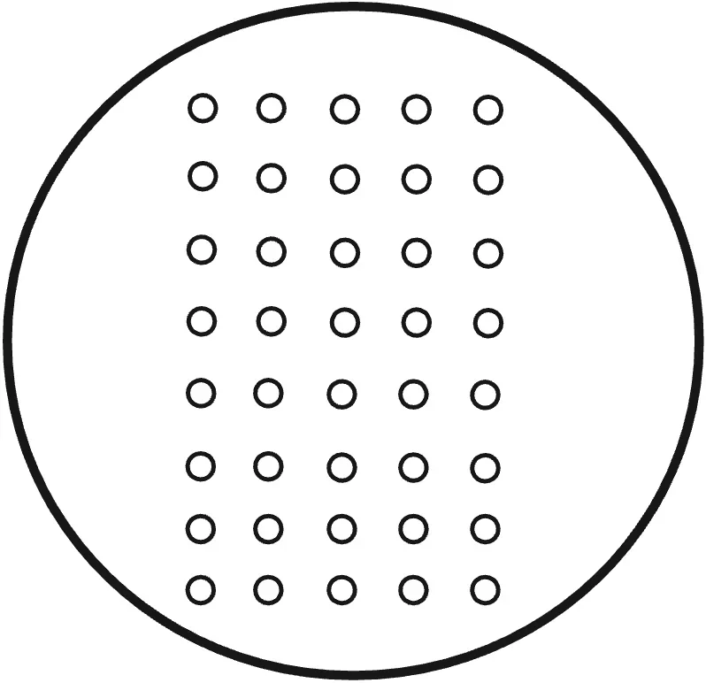
Recording every day
Vertical square plates. Observe for 10 days. Set up the black background platform and turn on the lights. Take the agar plates one by one out of the growth chamber and place them on the black background platform, bottom lid facing up. Take pictures, clearly recording the labels, with no reflections, avoiding water vapor covering the view of the plants. Place the agar plates back, tilted slightly to the back on the rack, in the growth chamber.
Horizontal round plates. Observe for 10 days. Take the agar plates one by one out of the growth chamber. Spray 70% EtOH on the agar plates and place them in the laminar flow hood. Unwrap the breathable tape. Place the agar plates on a black background platform, open lid, leaves facing up; on the last day, take out the lid and take the picture directly from the top view and measure fresh weight and chlorophyll data afterwards. Wrap a phone in plastic wrap and spray 70% EtOH before placing the phone inside the laminar flow hood. Take pictures, clearly recording the labels. Wrap breathable tape around the agar plates and place them back in the growth chamber.
Stress assays the vertical and horizontal plate assays, step by step
Vertical plate assay (Phase 1, trehalose)
- Take the stack of agar plates wrapped in aluminum foil out of the refrigerator.
- Spray alcohol on the agar plates before placing them inside the laminar flow hood.
- Use a marker to draw a straight baseline along a ruler 5.5 cm from the top of the plate on the back of each salinity plate.
- With an alcohol marker, mark 9 dots along the baseline in equal distances. The square agar plate is 12 cm horizontally with 10 spaces between the borders of the plate and between each seedling, so 12/10 = 1.2 cm as distance between each seedling.
- Place the square plates vertically at a slight angle.
- Choose 9 germinated seeds after vernalization that have similar root lengths or germination status and align the endpoints of their roots to the line drawn on the plate.
- Seal the plates with breathable tape and label the incubation date with a marker before placing the vertical plates on the stacks in the growth chamber, slightly tilted towards the back.
- Photograph the plates daily in the light box. A set runs for 6 to 14 days, depending on how fast the stress reads.
- At the end of the set, measure root length in ImageJ, weigh fresh weight and extract chlorophyll.
Each plate carries one condition, so the NaCl and trehalose concentrations are poured into the medium rather than applied to the surface.
Horizontal plate assay (Phases 2 and 3), heat stress
Transferring the seedlings
- Take the stack of agar plates wrapped in aluminum foil out of the refrigerator.
- Spray alcohol on the agar plates before placing them inside the laminar flow hood.
- Draw a straight line along a ruler 5.5 cm from the top of the plate, using the seed template.
- Place the plates at a slight angle.
- Choose 12 germinated seeds of similar root length or germination status and align the endpoints of their roots to the drawn line.
- Set up four groups: control, pre-treatment one day before, co-treatment on day 0, and post-treatment one day after.
- Seal the plates with breathable tape, label the transfer date, and place them on the rack in the growth chamber, tilted slightly towards the back.
Applying the treatments
- Pre-treatment, one day before. Open the biosafety cabinet. Dilute the CH peptide 1/500, that is 19.96 mL of sterile ddH₂O to 40 µL of peptide, in a 50 mL centrifuge tube and fit a sprayer. Take out the plate labelled pre-treatment, hold it vertically, and spray the peptide over the plants from leaves to roots at a distance of 15 cm, about two sprays, making sure every plant is covered. Seal with breathable tape and return it to the growth chamber.
- Co-treatment, day 0. Take out the plate labelled co-treatment, hold it vertically, and spray evenly at 15 cm, about two sprays. Seal with breathable tape.
- Place all four groups on a rack, plates standing at a slight angle, and put the rack into the incubator at 37 °C under white light for thermopriming.
- Observe the seedlings for a further 5 days in the incubator.
- Post-treatment, one day after thermopriming. Take the post-treatment plate out of the incubator, hold it vertically, spray evenly at 15 cm, seal with breathable tape and return it to the incubator.
Horizontal plate assay (Phases 2 and 3), salinity
- Label each plate with its timing group, pre-treatment, co-treatment, post-treatment or control, and its NaCl level, 0, 75 or 100 mM. That gives twelve conditions. For the ACC deaminase runs the control is TB medium rather than water.
- CH bio peptide, Phase 2. Dilute the peptide 1/500 in sterile water. Pipette 3 mL onto the agar surface to submerge it, then draw 2 mL back off, leaving 1 mL. The extra volume is what overcomes the surface tension of the agar, which otherwise leaves the liquid sitting unevenly. Add 1 mL of sterile water to every group not receiving the protectant, so the liquid volume is the same in all of them.
- ACC deaminase, Phase 3. Filter the preparation through a 0.22 µm filter inside the biosafety cabinet. Hold a sterile spray nozzle 10 cm above the plate and give three sprays, one top left, one top right and one at the bottom. Control plates are sprayed with TB medium.
- Apply the protectant on day −1 for pre-treatment, day 0 for co-treatment or day +1 for post-treatment. NaCl goes onto every corresponding plate on day 0, at the same time as the co-treatment.
- Photograph the plates in the biosafety cabinet and observe for 5 days.
- On the last day, harvest the seedlings for fresh weight and chlorophyll extraction.
Controls and quality control seven groups, and what each one rules out
| Control | What it tests |
|---|---|
| No NaCl, no protectant | Healthy baseline, no changes. All relative values are set against this group |
| NaCl, no protectant | How much damage the stress causes. This is the group the protectant must overperform to demonstrate effective rescue |
| No NaCl, plus protectant | Whether the protectant itself harms unstressed plants; for example, higher concentration dosage of protectants may have negative inhibitory instead of rescue effectiveness |
| Sterile water or TB medium instead of protectant | Equal liquid volume so the difference in liquid volume is not a hidden variable (submersion equality) |
| Commercial CH peptide and trehalose | Reference protectants with a known effect, to compare against the ACCD, LEA14 and BoPep4 released by our engineered Bacillus subtilis |
| Western blot of the sprayed Bacillus subtilis preparation | Whether the protein we claim to apply is present |
| Filtered TB medium from empty-vector Bacillus subtilis | Whether an effect comes from the medium rather than the engineered protein |
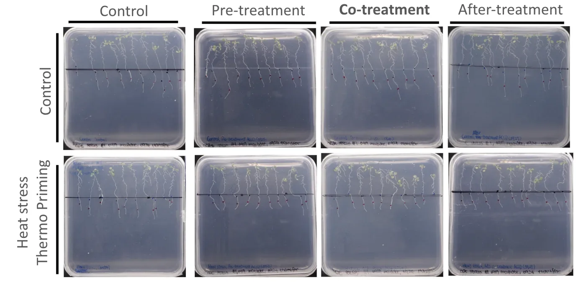
Results
Across eight experimental sets the agar platform answered the three questions it was built for. The stress dose has a usable window: rescue is readable between 75 and 100 mM NaCl, 150 mM stunts growth to roughly the same degree as 100 mM but leaves little room for a protectant to show an effect, and 250 mM bleached close to every seedling past recovery. Protectant dose matters in both directions, with 1 mM trehalose toxic and 0.5 mM too weak before the range was narrowed. And timing is readable: in the heat series above, ACC deaminase applied a day before the stress gave the longest roots of the four timing arms, which is the observation the whole delivery argument depends on.
Root length, trehalose against salinity
Every seedling measured on 27 July, by group. Each group is a plate of eight seedlings and each column is one seedling, so the spread within a group is visible rather than hidden behind its mean.
| Group | 1 | 2 | 3 | 4 | 5 | 6 | 7 | 8 | Mean |
|---|---|---|---|---|---|---|---|---|---|
| Control | 75.604 | 75.852 | 80.472 | 69.615 | 76.543 | 77.848 | 79.041 | 72.802 | 75.972 |
| 1 mM trehalose | 79.748 | 41.179 | 37.422 | 82.38 | 82.131 | 82.476 | 80.219 | 70.393 | 69.494 |
| 5 mM trehalose | 77.003 | 76.213 | 79.461 | 81.394 | 70.329 | 78.748 | 73.158 | 79.481 | 76.973 |
| 10 mM trehalose | 73.73 | 74.868 | 55.021 | 72.988 | 78.073 | 76.883 | 68.776 | 49.769 | 68.764 |
| 150 mM NaCl | 3.059 | 3.992 | 4.176 | 4.547 | 4.726 | 4.461 | 5.322 | 3.787 | 4.259 |
| 150 mM NaCl, 1 mM trehalose | 3.752 | 3.071 | 4.195 | 4.21 | 3.737 | 4.841 | 4.731 | 4.464 | 4.125 |
| 150 mM NaCl, 5 mM trehalose | 3.425 | 1.366 | 0.477 | 2.925 | 2.893 | 2.676 | 0.717 | 1.547 | 2.003 |
| 150 mM NaCl, 10 mM trehalose | 2.886 | 4.522 | 4.345 | 4.667 | 5.269 | 5.224 | 5.836 | 4.96 | 4.714 |
| 250 mM NaCl, 1 mM trehalose | 1.127 | 1.122 | 1.277 | 1.188 | 1.283 | 1.002 | 1.153 | 0.448 | 1.075 |
| 250 mM NaCl, 5 mM trehalose | 1.257 | 1.263 | 0.842 | 1.101 | 0.615 | 0.802 | 1.048 | 0.604 | 0.942 |
| 250 mM NaCl, 10 mM trehalose | 0 | 0 | 0 | 0 | 0 | 0 | 0 | 0 | 0.000 |
Salt is what moves this readout, and trehalose does not rescue it. The unstressed groups sit between 69 and 77 mm whatever the trehalose dose; at 150 mM NaCl every group collapses to between 2 and 5 mm, and at 250 mM the 10 mM trehalose group did not germinate at all. Root length therefore reports the stress reliably and the protectant not at all at these doses, which is why the trehalose case is argued from chlorophyll instead. The exception is 1 mM trehalose unstressed, whose mean is pulled down by two seedlings at 41 and 37 mm against six above 70: a mean of 69.5 there is a bimodal plate, not a dose effect.
The table below is the other half of that answer. Eleven of the problems that shaped those sets are listed with the set they appeared in and what we changed, because a working protocol that does not say how it stopped failing cannot be repeated by anyone else.
| Problem | Where | Fix or next step |
|---|---|---|
| Contamination (fungal, bacterial) | Sets 4, 5, 7, 8 | Stricter aseptic technique from Set 5; filter and spray preparations and seal plates with breathable tape inside the laminar flow hood for Set 8 repeats |
| Stress too severe (150 mM dried plants; 250 mM no recovery and severe chlorosis and bleaching) | Sets 1, 2, 5 | Narrowed to 75 and 100 mM NaCl for future experimental set testing |
| 1 mM trehalose toxic; 0.5 mM too weak | Sets 1 to 3 | Fine-tuned 0.125 to 0.5 mM in Set 3, then re-tested up to 10 mM in Set 5 |
| Inconsistent seedling growth | Pretest sets | Added a stratification stage of around 4 days before transferring plates to the growth chamber to synchronize plant growth and status |
| Weak or uneven seedlings; high sucrose causing dehydration | Early sets | Sucrose lowered from 3% to 1%; germination lengthened from 4 to 7 days |
| Transfer damage to fragile seedlings | Horizontal assays | Treatments added directly to existing plates |
| Uneven liquid coverage on agar | Phase 2 | 3 mL added then 2 mL removed (1 mL of liquid protectant or NaCl in plate); equal water volume in controls |
| No ACC deaminase in the sprayed preparation | Set 8 | Western blot of every batch before spraying |
| Plant roots struggle to penetrate the agar in horizontal plates, leading to deaths and lack of nutrients | Set 7 | Lowered the agar concentration from 0.8% to 0.6% |
| Too much humidity inside the agar plates and plants soaked in water | All sets | Place agar plates in the laminar flow hood to blow dry for 1 to 2 minutes to remove excess moisture |
| Root status and rosette leaf growth not obvious in observation pictures | Pretest sets | Place a black background under the agar plates in the laminar flow hood and wrap the phone in plastic to take clear, high resolution pictures for horizontal circular plates; place vertical square plates in a black background light box and use a professional camera for the daily record |
The agar platform is sensitive to stress and to protectant dose, has a clear rescue window near 100 mM NaCl, supported trehalose and the CH peptide as effective protectants, and gave evidence on application timing. Chlorophyll expressed relative to fresh weight can look high in small and stressed seedlings, so it must be read with fresh weight and the photographs.
Hydroponic stress test
We transplanted Arabidopsis into a hydroponic box to evaluate the efficacy of protectants on plants. We use hydroponics to test the effectiveness because we can control the environmental factors precisely. First, the agar in the lid and the medium in the hydroponic box ensure a complete nutrient supply for the plants. We also control humidity and temperature in a constant range to fix the outer conditions that may affect the results of experiments.
Agar settles the dose and the timing on a flat surface; hydroponics is where the same protectants meet a root system standing in liquid, which is the condition a field application has to work in. The two platforms share their readouts, so a number taken here can be set beside a number taken on a plate. What hydroponics does not give is root length: the roots grow into the well and cannot be photographed against a scale, so the readouts are fresh weight, chlorophyll and the daily photographs.
| Readout | Purpose | Units | Main limitations |
|---|---|---|---|
| Fresh weight | Measure total biomass; normalizes chlorophyll data | mg, measured per group | Smaller seedlings weigh little so errors are proportionally large |
| Photographs | Document physical leaf color, leaf area, lateral roots, and contamination issues | qualitative | Visual only. Used to support and not replace the quantitative data |
| Chlorophyll content | Test leaf health and chlorosis | mg chlorophyll per g fresh plant weight | Per-weight values can look high in tiny and stressed seedlings so they must be read with fresh weight and photographs |
Two vessels
Transparent tip box. After testing several prototypes of the hydroponic box, we settled on a 1000 µL tip box with a customized 3D printed board. The box is transparent, which lets us watch the plants and holds thirteen Arabidopsis seedlings. We used the tip box for the pretests of salinity and heat stress rescue by the CH peptide.
Tube rack. We first used the tube rack only to grow seedlings before an experiment began, then began running experiments in it directly. One rack holds forty-eight plants, enough to test ACCD and BoPep4 against both salinity and heat stress on a single rack. We moved to the rack because of time, and the plants in it grew at least as well as those in the tip box with less contamination. The build history of both vessels is on Plants; what follows is the measurement they carry.
What the platform is useful for
A reproducible hydroponic cultivation system. Hydroponics provides a stable environment for plant research by fixing nutrient availability, water purity and stress intensity. We tested two systems, the tip box and the tube rack, and record the materials, the assembly, the nutrient medium and the environmental conditions for both, so another team can rebuild either one.
A salinity-stress protocol. We took the salt concentration from Cortés-Jiménez et al. (2014). After several pretests, 100 mM NaCl is the concentration at which plants are damaged and can still be rescued by a protectant.
A heat-stress protocol. We followed the thermopriming designs of Lee et al. (2023) and Auverlot et al. (2025), the same two sources the agar assay uses, and exposed plants at 37 °C and 42 °C. The groups at 42 °C did not survive the day, while the groups at 37 °C were rescued by the CH peptide. A team setting up a heat assay can start from 37 °C and treat 42 °C as past the point of recovery.
A working dilution range for a bacterial supernatant. We tested 1/40, 1/60, 1/80 and 1/100 dilutions of both protectants. The plants tolerate all four, and 1/40, 1/60 and 1/80 are the three the team reads as giving the best rescue, ACCD under heat and BoPep4 under both heat and salinity. The finding another team can take without qualification is the ceiling: the carrier medium, and not the protectant, sets the strongest dose a plant will tolerate.
A contamination finding. Plants grown in the tube rack were contaminated less often than plants in the tip box. Our working explanation is the transfer step: tip box plants were moved from the rack at four days old, and although a group would usually survive three to four days afterwards, most ended in severe contamination. Plants left in the rack never have their roots handled.
A record of four boxes that did not work. We troubleshot four hydroponic boxes before the fifth, a 1000 µL tip box with a 3D printed board and a 3D printed black cover to keep light off the medium. The tip box is less stable than the tube rack, and we still offer the fifth design as a prototype other teams can modify.
Materials the lids, the agar in them, and the medium in the well
Planting the seeds
| Item | Amount per box |
|---|---|
| Eppendorf microtube lids | 13 |
| Leather punch | 1 |
| 0.6% agar | 250 µL |
| Tweezers | 1 |
0.6% agar, the plug each seed sits in
| Material | Manufacturer or source | Amount |
|---|---|---|
| ½ MS powder without sucrose | MS Bioexp, catalog number P002 | 0.000575 g |
| MES buffer | Santa Cruz Biotechnology, lot 10326 | 0.000125 g |
| Distilled water | – | 250 µL |
| Sucrose (1%) | Shimakyu's Pure Chemicals | 0.0025 g |
| Agar powder (0.6%) | Kaidin Technology Co., Ltd, lot 8140311 | 0.0015 g |
The hydroponic system
| Item | Manufacturer or source | Per tip box | Per tube rack |
|---|---|---|---|
| Arabidopsis thaliana seeds | Col-0; from Professor Peng and Professor Cheng | 13 seedlings, for stratifying | 48 seedlings, for stratifying and testing |
| 0.1× MS medium | – | 300 mL | 100.8 mL |
| 3 M NaCl, when 100 mM is applied | – | 10 mL | 3.36 mL |
| CH peptide, when applied | CH Biotech | 600 µL | – |
| Material | Manufacturer or source | Per tip box | Per tube rack |
|---|---|---|---|
| ½ MS powder without sucrose | MS Bioexp, catalog number P002 | 0.138 g | 0.0464 g |
| MES buffer | Santa Cruz Biotechnology, lot 10326 | 0.15 g | 0.0504 g |
| Distilled water | – | 300 mL | 100.8 mL |
| Material | Manufacturer or source | Per tip box | Per tube rack |
|---|---|---|---|
| MES buffer | Santa Cruz Biotechnology, lot 10326 | 0.005 g | 0.00168 g |
| ½ MS powder without sucrose | MS Bioexp, catalog number P002 | 0.0046 g | – |
| Distilled water | – | 10 mL | 3.36 mL |
| NaCl | Bioshop Canada Inc., CAS 7647-14-5 | 1.7532 g | 0.5890752 g |
Ten millilitres of that stock into 290 mL of medium gives the 100 mM working concentration in a tip box. The batch procedure below makes 400 mL of the same 3 M stock at once.
Protectant doses by phase
| Phase | Protectant | Dose and how added |
|---|---|---|
| 1 | CH peptide | 1/500 dilution, the manufacturer's recommended use; 600 µL per tip box |
| 2 | ACCD, BoPep4 | Filtered supernatant 0.642 mL, or 0.608 mL of supernatant from untransformed WB800 as the negative control, per well |
Growth procedure agar plugs, four days at 4 °C, then the growth chamber
0.6% agar for stratification
- Add the ½ MS medium powder, MES buffer, distilled water, sucrose and agar powder in the amounts above into a flask.
- Use a hot plate to stir, with a magnetic stirring rod, until no sediments are left in the solution.
- Measure the pH with a pH probe; the target is 5.7 to 5.8. If the pH is too low, add 0.1 M KOH slowly; if it is too high, add 0.1 M HCl slowly.
- Wrap the neck of the flask with aluminum foil and stick a piece of indicator tape on top.
- Autoclave for 20 minutes at 127 °C. Wait for the pressure to reach 0 before retrieving the flask.
The lids, while the agar autoclaves
- Prepare 48 Eppendorf microtube lids for each of the heat and salinity stress tests.
- Use scissors to cut the lid off the microtube.
- Use a leather punch to punch a 3 mm hole in each lid.
- Put the lids into a small beaker, wrap it with aluminum foil and stick a piece of indicator tape on top.
- Autoclave for 20 minutes at 127 °C. Wait for the pressure to reach 0 before opening the autoclave.
- Add 250 µL of 0.6% agar into each lid and wait until it solidifies.
The rack
- Soak a tube rack in bleach for 10 minutes and rinse it with ddH₂O until there is no smell of bleach on it.
- Add 2.1 mL of 0.1× MS medium into each of 48 wells.
- Put the Eppendorf lids onto the wells using tweezers.
Sowing and stratification
- Use an autoclaved toothpick to pick up one seed.
- Place the seed onto the agar through the hole in the lid.
- Wrap the rack with aluminum foil.
- Place the rack in the refrigerator at 4 °C for 4 days to stratify.
- Move the rack to the growth chamber after the 4 days.
3 M NaCl in 0.1× MS medium, batch of 400 mL
- Add ½ MS powder, MES buffer and ddH₂O into a 500 mL flask.
- Use the hot plate to stir, with a stirring rod, until no sediments are left in the solution.
- Adjust the pH to 5.7 to 5.8 with 1 M KOH, using a pH probe.
- Add 70.128 g of NaCl in batches, slowly, into the flask.
- Use the stirring rod to dissolve all the NaCl into the medium.
Transfer from rack to tip box
- After stratification, take the four-day-old plants off the rack onto the 3D printed board.
- Pour 300 mL of 0.1× MS medium into the hydroponic box.
- Place the board carrying 13 plants on the medium.
- Close the lid and put the box in the incubator.
The daily record, for both vessels
- Observe for 10 days.
- Wrap the phone in plastic wrap and wear latex gloves.
- Turn on the biosafety cabinet and lower the plastic board to the line.
- Spray 75% alcohol on the gloves and on the wrapped phone.
- Open the lids of the rack or the tip box inside the cabinet.
- Take pictures that do not reflect.
- Close the lids and return the vessel to the incubator, then close the cabinet.
Phase 1, the CH peptide in a tip box salinity and heat, with the four timing arms
The CH peptide is a commercial product designed to protect plants against general abiotic stress, and it is better characterized than ACCD, BoPep4 or LEA14. Phase 1 therefore asks whether the platform can show a rescue at all, using a protectant that should produce one.
Salinity
- When Arabidopsis is 4 days old, transfer it with tweezers to an autoclaved hydroponic box with 300 mL of 0.1× MS medium.
- Wait until it is 10 days old.
- Transfer it into a new box with 290 mL of 0.1× MS medium and 10 mL of 3 M NaCl.
- Add 600 µL of CH peptide to each box.
- Change the medium carrying salinity and peptide back to 300 mL of 0.1× MS medium.
- Observe and photograph for 7 days.
We use 100 mM NaCl from Cortés-Jiménez et al. (2014), which concludes that 1 to 100 mM is the range in which microorganisms can rescue the plant.
| Group | What it tests |
|---|---|
| NaCl, no protectant | How much damage the stress causes. This is the group the protectant must overperform |
| Pre-treatment, protectant 3 days before NaCl | Which timing rescues the plant best |
| Co-treatment, protectant and NaCl together | |
| Post-treatment, protectant 3 days after NaCl |
Heat
- When Arabidopsis is 4 days old, transfer it to an autoclaved hydroponic box with 300 mL of 0.1× MS medium.
- Wait until it is 10 days old.
- Prepare new boxes with 300 mL of 0.1× MS medium each and put them in the incubator at 37 °C to warm the medium.
- Put 300 mL of water in a further box with a thermometer in it, and place it in the incubator to read the medium temperature.
- When the medium reaches 37 °C, transfer Arabidopsis into the warmed boxes with tweezers.
- Add the protectant to the medium at the correct concentration.
- Observe and photograph for 3 days.
- Prepare new boxes with 300 mL of 0.1× MS medium at 22 °C.
- Transfer Arabidopsis into them with tweezers and place them in the growth chamber at 22 °C to recover.
- Observe and photograph for 7 days.
| Group | What it tests |
|---|---|
| 37 °C, no protectant | How the plant behaves at 37 °C, and the baseline the treated groups are compared against |
| Pre-treatment, protectant 1 day before 37 °C | Which timing rescues the plant best |
| Co-treatment, protectant as the temperature rises | |
| Post-treatment, protectant 3 days into 37 °C |
The temperature in step 3 is recorded as 37 °C in this protocol and as 33 °C on one timeline figure held with the run photographs. Nothing in the record settles which the incubator actually held, and the disagreement is carried on Plants as it stands.
Phase 2, ACCD and BoPep4 in a tube rack how a dose is made up, and the two stress runs
Our protectants are produced by B. subtilis grown in TB medium, and we add that medium to the 0.1× MS medium the plants grow in. Every dilution is made by mixing TB into 0.1× MS medium, so 1/60 TB means that 59 parts in 60 are 0.1× MS medium.
Salinity
- Wait until Arabidopsis is 7 days old.
- Add 2.1 mL of fresh 0.1× MS medium to each well, so the plants do not run short of nutrients.
- Wait until they are 10 days old.
- Prepare master mixes at the protectant concentrations to be tested, holding the B. subtilis TB medium at 1/40 in every mix. When ACCD is the protectant, add pyridoxal 5'-phosphate at 1/100, because ACCD does not turn over without it.
- Label the wells, add 2 mL of master mix to each, and add 0.07 mL of 3 M NaCl to the wells under 100 mM salinity stress.
- Transfer the plants onto the rack and return it to the growth chamber.
- Observe and photograph for 7 days.
Heat
- Follow steps 1 to 4 above.
- Label the wells and add 2.1 mL of master mix to each.
- Transfer Arabidopsis onto the rack.
- Put the rack into the incubator at 37 °C.
- Observe and photograph for 5 days.
ACCD only functions in the presence of pyridoxal 5′-phosphate (PLP), so the ACCD treatment is ACCD together with PLP and the matching control is PLP alone in the medium, labelled 0.1× MS medium in the photographs. BoPep4 needs no cofactor, so its control is the medium without BoPep4. Both runs carry a second control, 1/40 WB800: B. subtilis in TB medium with no protectant, which separates an effect of the carrier from an effect of the protein.
Finding a dilution the plants survive
TB at full strength kills the plants, so the first run was a pretest on TB medium carrying B. subtilis and no protectant, to separate the carrier from anything the protectant might do. We tested 1, 1/2, 1/4, 1/8 and 1/16, with 0 as the control, at pH 5.7 and pH 7. The optimum for Arabidopsis is 5.7 and ACCD works best at about 7.5 (Liu et al., 2022), which Arabidopsis will not tolerate, so 7 is the compromise we tested against.

Every TB concentration in the pretest was too strong for the plants to survive, including 1/16. That is a failed rescue window, and it is still the reading that set the next run: the damage falls off steadily with dilution, so the usable range had to be below 1/16.
The salinity run that followed tested ACCD at 1/10, 1/20, 1/40 and 1/60 against 0 ACCD, each with and without 100 mM NaCl, and carried a separate group of 1/20 TB alone at both salt levels. The spacing was deliberate: the pretest had already ruled out everything down to 1/16, so most of the new series went below that, and 1/10 was kept as the single dose stronger than anything the pretest tolerated, to check that the damage really did continue to rise with concentration rather than plateau. We had expected 1/20 to be dilute enough for the plants to live and 1/40 and 1/60 to be almost without effect.

The expectation was wrong in one place and right in the other. The 1/20 WB800 negative control itself showed a clear stress response, smaller plants and anthocyanin accumulation, so 1/20 of the carrier affects growth on its own. ACCD at 1/10 and 1/20 bleached leaves even at 0 mM NaCl, while 1/40 did not, and the 1/40 group carried the highest fresh weight and chlorophyll content of the unstressed groups. We therefore fixed 1/40 as the strongest dose in every later run, and these two runs together narrowed the working range from undiluted TB to 1/40 through 1/100.
BoPep4 across the same dilutions, under salt
BoPep4 was then run over 1/40, 1/60, 1/80 and 1/100, with and without 100 mM NaCl. The series starts at 1/40 because that was the strongest dose the ACCD salinity run tolerated. The controls are the same two: 1/40 WB800, which is the carrier without a protectant, and 0.1× MS medium alone.

Without salt, the BoPep4 wells show slight anthocyanin accumulation at every dilution from 1/40 to 1/100, while neither 1/40 WB800 nor plain 0.1× MS medium reddens. On an unstressed plant, in other words, BoPep4 looks mildly costly rather than beneficial.
Under 100 mM NaCl the result reverses. Most groups bleached and died; the exception is 1/40 BoPep4, where the plants mostly stayed green, and that group also carries the highest fresh weight and the highest chlorophyll per plant of anything at 100 mM. The reading we take from the set is narrow: BoPep4 at 1/40 improves salinity tolerance, and the weaker dilutions do not separate from their controls.

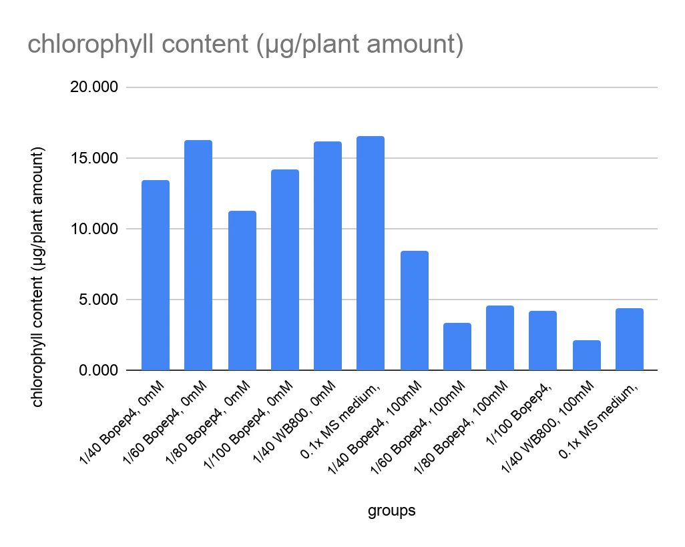
Both readouts are single plates with no technical replication, so the gap between 1/40 BoPep4 and the rest of the salted block is what the run supports, and the ordering among 1/60, 1/80 and 1/100 is not.
The two heat runs
The ACCD and BoPep4 heat tests were set up together and differ only in the protectant, so the two panels below can be read against each other. In both figures the blue rack is the heat control at 22 °C and the white rack is the heat treatment at 37 °C.


At 22 °C both racks carry full green rosettes at every dilution, which says the carrier at 1/40 and below is no longer doing the damage the pretest showed. At 37 °C every group is pale and stunted, the dosed wells along with the two controls, so neither protectant separates from its control on these photographs. The run is reported here as a protocol that worked and a rescue that did not appear; what the same plants gave as fresh weight and chlorophyll is on Plants.
What went wrong, and what we changed
| Problem | Fix or next step |
|---|---|
| Contamination, fungal and bacterial | Stricter aseptic technique, and the move from the tip box to the tube rack, which removes the transfer step |
| TB medium itself damaging the plants | Pretest on TB alone, then a salinity run that put the ceiling at 1/40 |
| ACCD inactive in the medium | PLP added at 1/100 to every ACCD mix, with PLP alone as the matched control |
| Plants not surviving 42 °C | Heat stress set at 37 °C |
Hydroponics was easier to control than a field and harder to control than we expected. Repeating the same trial does not reliably give the same result, even holding 37 °C and 100 mM NaCl after Cortés-Jiménez et al. (2014) and Lee et al. (2023). What the platform does establish is a working window: co-treatment is the timing under which both protectants rescued plants at 100 mM salinity, and dilutions of 1/80 and weaker are where the carrier stops interfering with the protectant's own effect. Those two findings set the arms of the Phase 2 runs.
Chlorophyll extraction
To assess the physiological response of Arabidopsis thaliana seedlings under stress, and evaluate protectant treatment rescue effectiveness in our project, chlorophyll extraction is introduced as a precise tool of measurement to strengthen the analysis of each experiment's results.
Chlorophyll is the pigment that captures light energy for photosynthesis, so how much of it a leaf holds tracks how well the plant is growing (Roberts, 2023). The metabolic pathways that govern the chlorophyll biosynthesis are complex, which abiotic stress such as salinity stress, drought, extreme temperature variations can substantially perturb these processes (Li et al., 2024).
As connected to our project, we mainly focus on two abiotic stress types: salinity and heat. Given this category, these abiotic stressors trigger the overproduction of reactive oxygen species, leading to lipid peroxidation and chlorosis. Hence, extracting the chlorophyll as a form of data readout and measurement allows quantification on the degree of chlorosis, and permits accurate evaluation of plant physiological response in our experiments that cannot be visually and directly assessed through bare eyes.
Total chlorophyll content
Chlorophyll a + b (mg g−1) = (8.02 × A663 + 20.20 × A645) × V / (1000 × fresh weight)
The equation and its coefficients are those of Kumari et al. (2018); the extraction procedure follows Zhang and Huang (2013), with our own changes to the grinding and readout steps set out below.
| Formula component | Purpose |
|---|---|
| A663 | The absorbance of the extract at a wavelength of 663 nm, which corresponds to the peak absorption of chlorophyll a |
| A645 | The absorbance of the extract at a wavelength of 645 nm, which corresponds to the peak absorption of chlorophyll b |
| 8.02 and 20.20 | Empirical absorption coefficients derived from simultaneous linear equations, mainly to prevent overlapping absorption spectra between A663 and A645 |
| 1000 | A conversion factor used to change micrograms to milligrams |
| V | Total volume of extraction solvent |
| Fresh weight | Initial mass of the fresh plant tissue sample, measured in grams |
Materials acetone, beads, a plate reader and a 96-well plate
| Material or chemical | Manufacturer | Specification | Amount |
|---|---|---|---|
| Experimented Arabidopsis thaliana seedlings on each agar plate | – | – | Horizontal: 40 seedlings per plate. Vertical: 12 seedlings per plate |
| Acetone | – | – | 4 mL of diluted 80% acetone per 15 mL centrifuge tube |
| Stainless steel beads | – | 304 and 314 grades | 4 beads per tube |
| 15 mL centrifuge tubes | Biosharp, BS-150-M-S | – | 1 tube to hold all seedlings in each individual experimental group |
| ELISA reader | Infitek MPR-A200HT | – | 1 |
| 96-well plate | BasicLife, BL6060 | – | 1 |
| Vortex machine | – | – | as needed |
| Tweezers | – | – | as needed |
| Weighing plate | – | – | as needed |
Our protocol records 4 beads per tube in the materials table and 10 in the procedure. Ten is what the procedure says to add.
Procedure from lifting the seedlings to reading A663 and A645
- Using a tweezer, lift and pick up all Arabidopsis plants simultaneously from the agar plate in a single motion. Be careful not to hurt the plants by squeezing the tweezer, and lift from below the leaf area.
- Put the plants on a tissue paper, lightly press to remove the agar sticking to the plants. Be careful not to press the leaf areas too hard.
- Place all plants in a weighing plate, weigh the fresh weight of Arabidopsis, a plate at a time.
- Pick up the plants and put them in a 15 mL centrifuge tube, taking care that the entire plant and the roots go in too.
- Label the group concentration and the respective fresh weight on the tube.
- Repeat these steps for as many times as the sets of Arabidopsis you are testing.
- Place 10 stainless steel beads in each of the centrifuge tubes and hold them at −80 °C for at least 1 hour. The same hold is used wherever seedlings are frozen before extraction, here and in the fresh weight procedure.
- Dilute acetone to 80%, add 4 mL to each tube.
- Allow the chlorophyll to extract fully. Vortex or shake vigorously to disrupt the plant tissue and accelerate extraction, and carry on until the pellet has turned from green to white.
- Label what samples are in each well before loading. This is very important.
- Add the liquid to the 96-well microplate, 200 µL in each well, with three technical replicates per sample. Blank the OD on 200 µL of 80% acetone.
- Insert the 96-well plate in the ELISA reader and run the results through the equation above. Make sure to select the correct wavelength: A663 for chlorophyll a, A645 for chlorophyll b.
From the reader to a graph the raw table, the conversion sheet and the Prism settings
Paste the raw data directly onto the spreadsheet, ensuring each value follows its corresponding wavelength and replicate on the table.
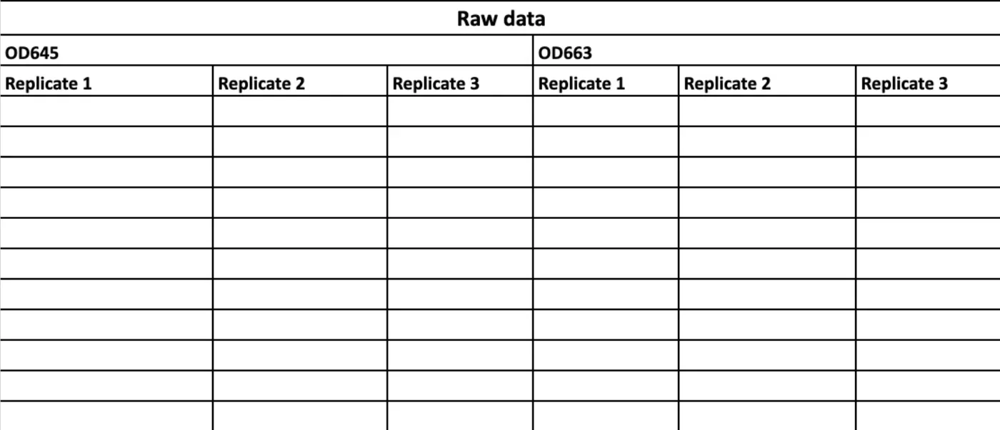
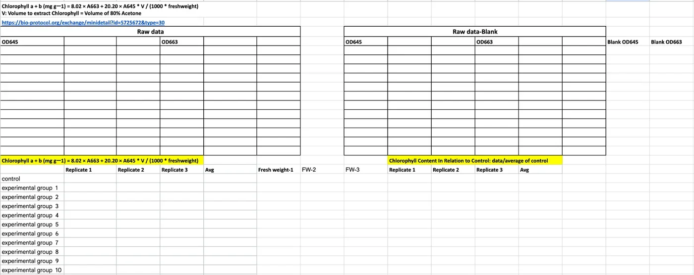
The chlorophyll content of each experimental set result is calculated through the formula above. Certainly, we further converted processed data in each replication into a relative chlorophyll content in relation to control, meaning to divide the chlorophyll data by control. We used Prism to turn processed data replicates into bar graphs, selecting "mean with SEM" as the standard error of the mean.
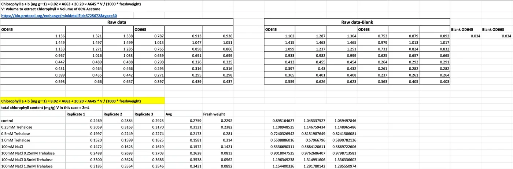
Results
Chlorophyll content maps out the data trend and visualizes seedlings' internal stress regulatory response among experiments.
Trehalose treatment at 0.25, 0.5 and 1.0 mM has an upward trajectory of rescue effectiveness combatting 100 mM NaCl. In phase 1 of trehalose and NaCl agar testing, we integrated chlorophyll content since conducting experiment set #4; through chlorophyll extraction, we were able to visualize the chlorophyll content among different groups. The relationship of trehalose dose between control and 100 mM NaCl conditions shows a conversely contrasting pattern: under baseline conditions, higher trehalose doses slightly reduce baseline chlorophyll levels, whereas under 100 mM NaCl stress, they progressively rescue and enhance chlorophyll retention in a dose-dependent manner. Although 0.5 mM trehalose still rescues better than the other doses, the overall trend demonstrates a progressive upward trajectory that indicates trehalose's protective efficacy in mitigating salinity stress.
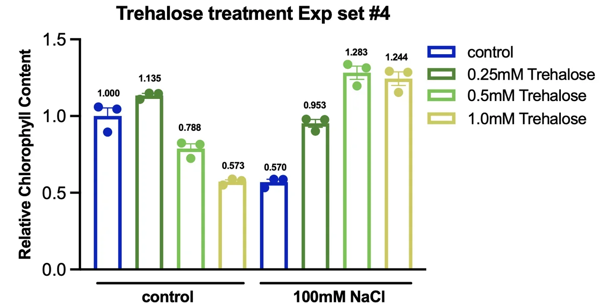
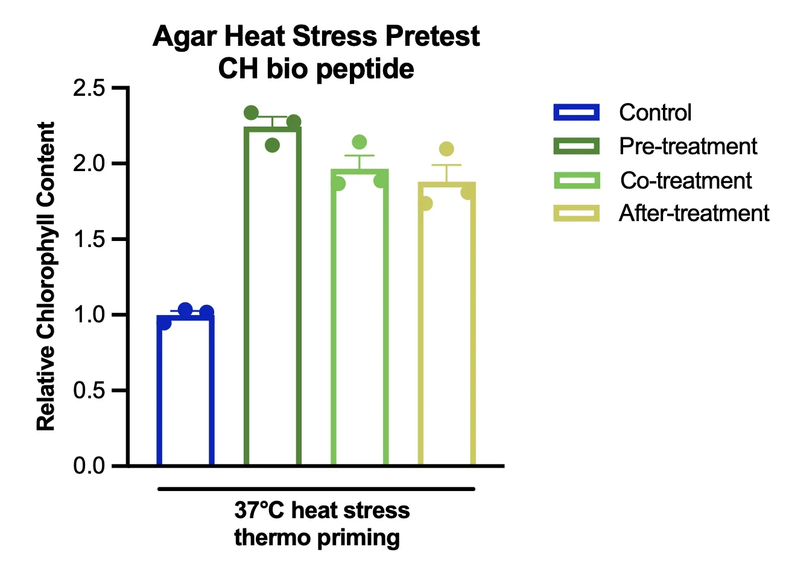
Read the trehalose chart with the caution the agar section ends on: the values are per gram of fresh weight, and stressed seedlings weigh very little, so a group can read high on this chart while the plate photograph shows smaller plants. Both charts plot three technical replicates as mean with SEM. No significance testing was run on them, so a difference between two bars is a difference in our measurements and not a tested one. The heat pretest chart is a single set and its control group is the only group without the peptide, so it sets the baseline; it does not test the peptide against a stressed, untreated plate.
Comparison of fresh weight-normalized and non-normalized chlorophyll content
Dividing by fresh weight is the standard way to report chlorophyll, and it is the wrong way round when stress has destroyed the biomass that sits in the denominator. The case that showed us this is the ACC deaminase heat stress assay described in the physical measurements chapter, and the numbers below come from that one experiment.
Seedlings given no protectant and held at 37 °C for 5 days lost 92 to 97% of their fresh weight: the stressed groups weighed about 0.02 g against about 0.67 g unstressed, weighed per group on the analytical balance. Expressed per gram, those flattened seedlings then appeared to hold about three times more chlorophyll than the unstressed plants, 0.366 against 0.121 mg g−1, computed from the same absorbance readings as every other value in this chapter. Total chlorophyll in the extract, the same readings without the division, had fallen by about 91%. The two measures point in opposite directions, and only one of them agrees with the photographs.
Fresh weight also includes roots, which hold no chlorophyll, so a per-gram value moves with the shoot-to-root ratio as well as with pigment. We therefore report both measures and choose between them by the situation: chlorophyll per gram of fresh weight where biomass is comparable across groups, and total chlorophyll in the extract where it is not.
The physical measurements of Arabidopsis thaliana
Alongside the chlorophyll extraction data collection, both fresh weight and root length data have been collected for selected experimental sets.
Fresh weight is most closely used to accompany chlorophyll extraction because the fresh weight of each experimental set is used to normalize the chlorophyll accordingly. On the other hand, primary length data was collected to observe the effect of salinity and respective protectant application on root behaviour. The expected behaviour of the primary roots was conducting halotropism, where roots pave their way through the agar as usual but specifically bending away from the salty patches to search for areas without osmotic stress (Zou et al., 2021). However, considering our entire agar plate was mixed with NaCl of different concentrations, the root length of respective agar plates was clearly affected, and root length differed between the salted plates and the unsalted ones.
Root length, materials and procedure a light box, a 3D printed rack and ImageJ, after Corrales et al. 2014
| Material | Amount |
|---|---|
| Experimented Arabidopsis thaliana seedlings on each agar plate | Horizontal: 40 seedlings per plate. Vertical: 12 seedlings per plate |
| Camera | Sony ZV-E10 with a Sony E PZ 16–50 mm f/3.5–5.6 OSS lens, fixed position, ISO 640, self-timer; 1 |
| Tweezers | as needed |
| Light box | Shenzhen PULUZ, black and white backgrounds; 1 |
| 3D printed agar plate rack | 1 |
| Ruler | 15 cm, included in frame as the scale reference; 1 |
- Turn off the lights.
- Place one plate of the experimental set into the 3D printed agar plate rack.
- Place the rack into the light box.
- Set up a ruler vertically next to the agar plate rack. It appears in every trial photograph and is what ImageJ is calibrated against, so the scale comes from an object in the frame instead of an assumed camera distance, and a plate photographed at a slight angle can be caught rather than silently foreshortened.
- Set the 3 second self-timer on the camera.
- Press the snapshot button, and use a black sheet of cloth to cover the entrance of the light box, so the images have no reflection to interfere with data collection.
- Zoom into the captured image to ensure quality.
- Repeat steps 2 to 7 with each agar plate of the experimental set.
- Upload images into ImageJ.
- Set the scale from the ruler in the frame using ImageJ: draw a straight line along a known distance on the ruler, 150 mm, then Analyze → Set Scale → known distance → unit of length, mm → Global → OK.
- Measure the length of the primary root from the marked start position to the tip using the segmented line option, then press Control+M to measure.
- Save the measured data in the ROI manager.
- Repeat steps 11 and 12 for all the Arabidopsis plates.
- Select all of the measured data in the ROI manager and click Measure. The measured root length in mm should appear.
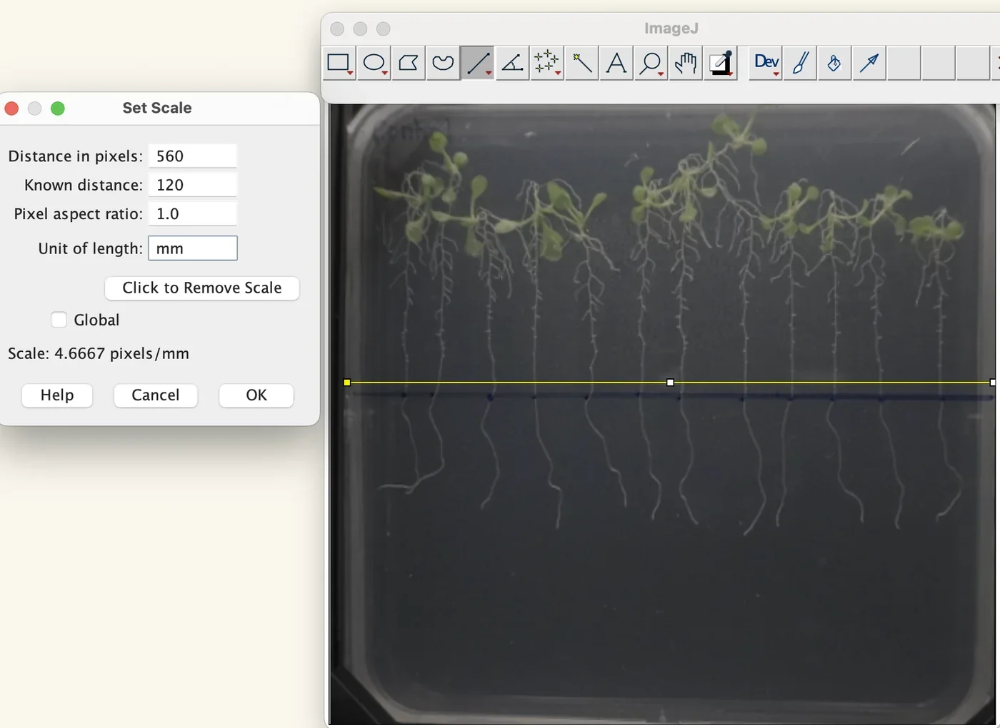
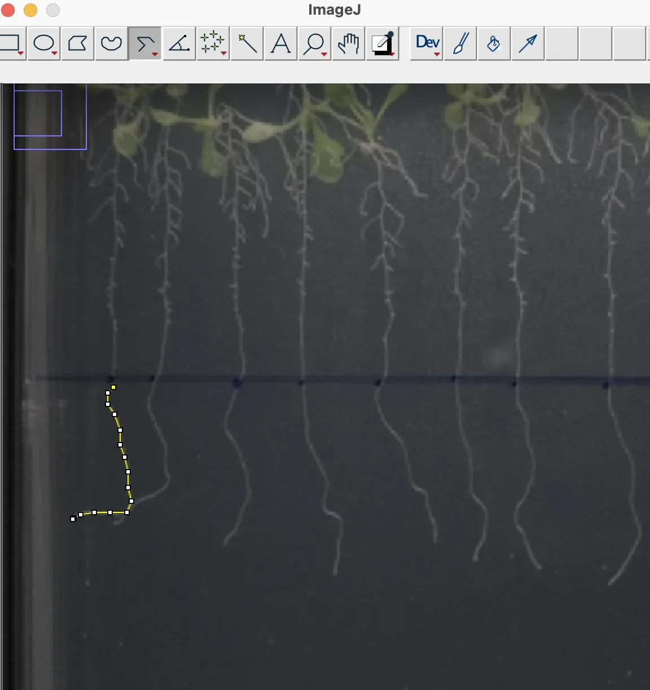
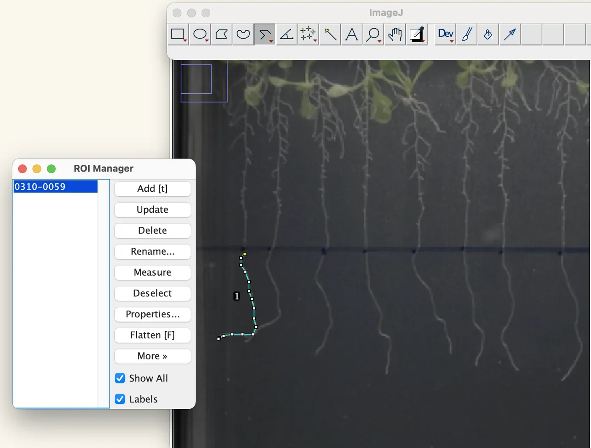
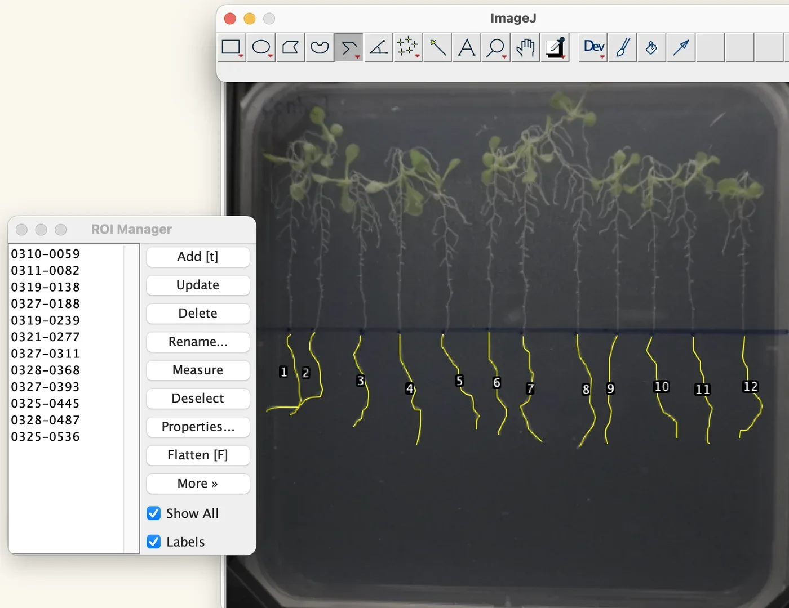
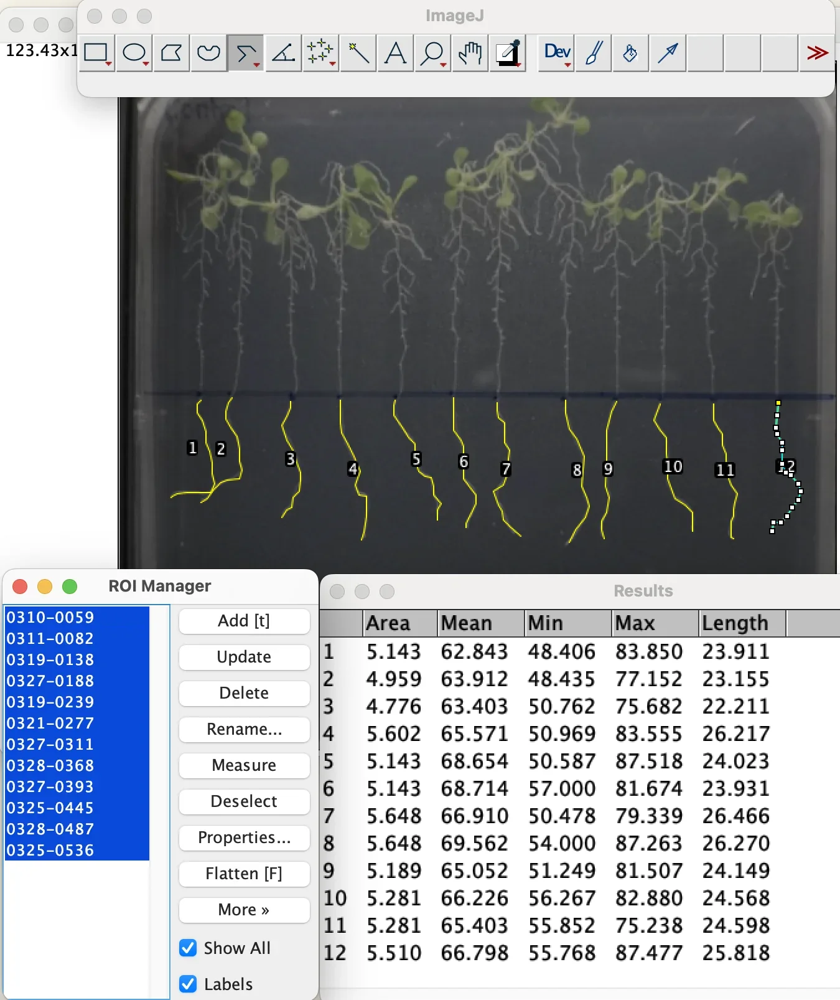
Fresh weight, materials and procedure tube, tare, tweezers, and into −80 °C before extraction
| Material | Manufacturer | Amount |
|---|---|---|
| Experimented Arabidopsis thaliana seedlings on each agar plate | – | Horizontal: 40 seedlings per plate. Vertical: 12 seedlings per plate |
| Analytical balance | BEL Engineering | Readable to 0.0001 g and accurate to ±0.001 g; fresh weights are reported at the readability, so the fourth decimal is the display and not a claim about accuracy; 1 |
| Tweezers | – | as needed |
| Paper towel | – | 1 |
| 15 mL centrifuge tubes | – | 1 tube to hold all seedlings in each individual experimental group |
| 3D printed centrifuge tube holder | – | 1 |
- Label each centrifuge tube with the independent variable of the experimental set.
- Twist off the cap of the centrifuge tube and place it inside of the centrifuge tube holder.
- Calibrate the electronic scale with the centrifuge tube inside of the electronic scale.
- Use tweezers to lift a seedling off of the agar plates. Ensure no roots are stuck inside of the agar, and be careful not to damage the plants by squeezing the tweezers on the leaves; lift from the bottom side of each of the 2 leaves.
- Gently pass the roots back and forth on the paper towel 5 to 6 times to remove excess agar residue before weighing. This step is about agar clinging to the roots, which would otherwise be weighed as plant; it does not remove contamination.
- Place the seedling into the centrifuge tube.
- Repeat steps 4 to 6 with all seedlings.
- Place the centrifuge tube rack with the centrifuge tube and seedlings inside of it onto the electronic scale.
- Close the door and wait for 30 seconds for calibration before recording the fresh weight data.
- Remove the centrifuge tube rack from the electronic lab scale.
- Twist the lid back on.
- Label the tube with its fresh weight.
- Repeat steps 1 to 12 with every agar plate with each independent variable of the experimental set.
- Place all centrifuge tubes containing seedlings into −80 °C for at least 1 hour before continuing with chlorophyll extraction.
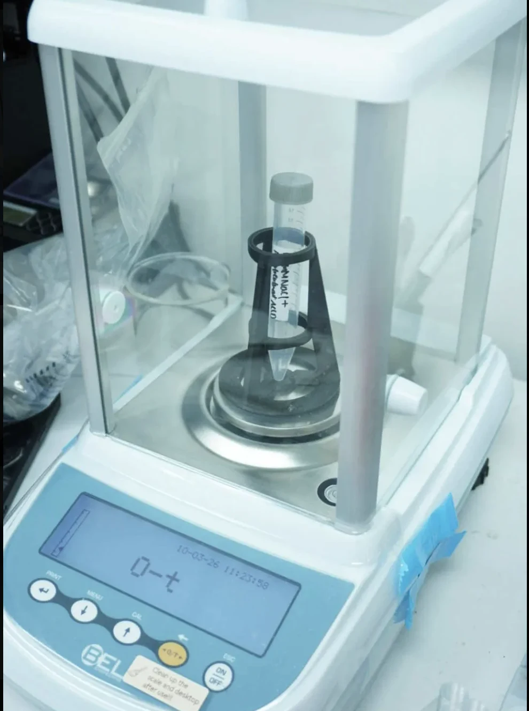
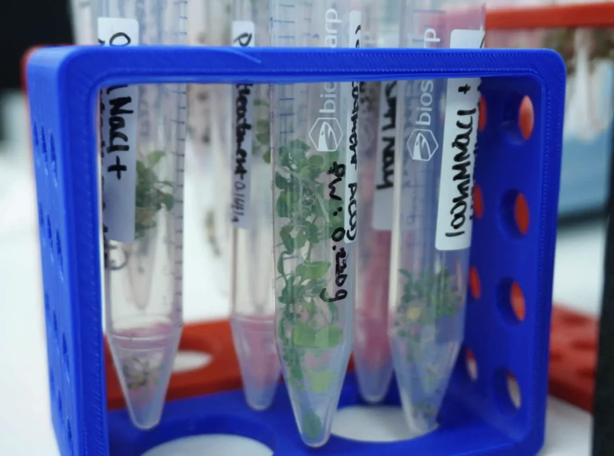
What the procedure above fixes is the part that decides whether the numbers mean anything: the ruler in the frame as the scale, the baseline the root is measured from, and the blotting step before the balance.
Results
Every number below comes from one experiment, the ACC deaminase heat stress trial 1 described above, and from nowhere else. Root lengths are the mean of the primary roots on each plate, traced in ImageJ against the ruler in the frame and reported in millimetres to three decimal places. Fresh weights are the mean per plate, weighed on the analytical balance and reported in grams at the balance’s readability of 0.0001 g; its stated accuracy is ±0.001 g, so differences smaller than a milligram are not resolved.
Root length, heat stress with ACCD, trial 1. Averaged over the whole trial, unstressed Arabidopsis reached 116.417 mm of primary root against 43.186 mm under heat stress, so thermopriming at 37 °C costs the root system roughly two thirds of its length. Within the heat-stressed groups, ACCD applied before the stress gave the longest average root at 46.857 mm, and the co-treatment group performed worst.

| Group | Mean root length, mm | Block mean, mm |
|---|---|---|
| No heat stress, no ACCD | 116.302 | 116.417 |
| No heat stress, pre-treatment | 135.731 | |
| No heat stress, co-treatment | 94.675 | |
| No heat stress, post-treatment | 118.958 | |
| Heat stress, no ACCD | 40.903 | 43.186 |
| Heat stress, pre-treatment | 46.857 | |
| Heat stress, co-treatment | 39.238 | |
| Heat stress, post-treatment | 45.746 |
Read down the table rather than across it. Under heat, all three treated groups except co-treatment beat the untreated 40.903 mm, which is the comparison the project rests on. Without heat the pattern does not hold: co-treatment at 94.675 mm is well below the untreated 116.302 mm, so the timing arms are not ranking consistently in the absence of stress either.
Fresh weight, the same trial. Unstressed plants averaged 0.5069 g against 0.0237 g under heat stress, which is the water loss thermopriming causes stated as a number. Among the heat-stressed groups the post-treatment plants held the most water at 0.0318 g, with pre-treatment next at 0.0258 g; the post-treatment group also had three days of recovery under normal conditions, which the comparison cannot separate from the treatment itself.
Both readouts agree on the part that matters for the project: stressed plants given ACCD do better than stressed plants given none. The timing arms do not rank consistently from one experimental set to the next, so the pre-treatment advantage seen here is a repeated observation and not a settled result. It is the observation the delivery argument rests on: a protectant that works best before the stress arrives is what makes stress prediction worth doing.
What went wrong, and what we changed
Plates leaning back in the light box shortened the roots. A plate resting against the back of the box is photographed at an angle, which foreshortens everything on it. We 3D printed a rack that holds a 12 to 13 cm square plate upright, so the plate is square to the camera and the ruler beside it calibrates ImageJ at the distance it claims to be.
Reflections obscured the measurement. Turning off the room lights and covering the opening of the light box with black cloth was not enough, because the box's own lights reflect off the plate. Moving the rack within the box and changing its distance from the camera left a reflection only at the extreme edges, clear of the roots.
Roots grew over each other in the denser groups. In the control groups especially, the primary root could not be told from its neighbours. For the last two or three sets we lifted the plants onto a thin sheet of black foam, laid parallel; pulled from the agar they clump, and the primary root is the longest, so it can be followed. Those photographs were taken from directly overhead with a 15 cm ruler beside the plants for calibration.
Protectant assays
Three measurements follow the protein from the cell to the working enzyme. The Western blot asks whether a protein of the right size leaves the cell. The ELISA puts a concentration on it. The DNPH assay reads a product of the reaction the enzyme is supposed to catalyse, and so is the only one that says whether the protein does anything. A concentration and an activity answer different questions and are not interchangeable, which is why both are here.
A plant bioassay is the most complete test of whether a protectant works, and it is also the slowest and the least forgiving. A run depends on plant husbandry and cultivation stability, and a contaminated box or an uneven stress spoils weeks of work before it says anything about the protein. These biochemical assays exist so that production can be optimised in the reactor without waiting on a plant.
They are ordered by cost. The Western blot is the cheap first screen: it says whether a band of the right size appears under a given production condition. Once the conditions are set, the ELISA is what turns that into a yield in µg/mL. Which assay settles a protectant then depends on what the molecule is.
- Enzymes. ACC deaminase has catalytic activity of its own, so it can be validated functionally and quantified directly by the DNPH colorimetric assay.
- Non-enzymatic proteins. LEA14 catalyses nothing, so there is no activity to read and the ELISA is what quantifies it.
- Peptides. BoPep4 is small enough that a standard Western blot does not resolve or reliably detect it, which leaves the ELISA as its only detection and quantification route here.
Western blot
To verify whether the engineered B. subtilis could successfully produce and secrete protein or peptide products, we performed a Western blot to detect the secreted protein via the His tag we added at the C-terminus.
Western blotting separates proteins by molecular weight using polyacrylamide gel electrophoresis, transfers them onto a PVDF membrane, and uses a specific antibody to visualize the target. Standard quantification assays return a total; they cannot tell our protein from the host's. The blot answers a narrower question that the total cannot: is a band present, and is it the size the construct predicts.
What the measurement contributes
Sample preparation from a bioreactor. We established a workflow for separating and concentrating protein from bioreactor culture supernatant, which arrives dilute and carrying medium components.
Verification of recombinant protein expression. Using an anti-His antibody against our ACCD construct, we confirmed the presence and the molecular weight of the expressed bioprotectant. We also recorded where the expressed protein ran larger than its amino acid sequence predicts, which fusion tags or incomplete denaturation can both cause, so a team reading an unexpected band has a documented case to compare against.
Semi-quantification across a run. We tracked ACCD across bioreactor sampling points, collecting liquid every two hours, to find the phase of peak production.
Materials per gel
| Item | Amount |
|---|---|
| TGX FastCast acrylamide solutions | Bio-Rad; 1 gel |
| Power supply | 1 unit |
| Mini-PROTEAN vertical electrophoresis cell | 1 unit |
| Shaker | 1 unit |
| Chemiluminescence imaging system | 1 unit |
| Micropipettes | as required |
| PVDF membrane | Millipore, 1 sheet |
| 3M filter papers | 2 sheets |
| Sponge pad | 2 |
| Cassette and gel holding cassette | 1 each |
| 1× transfer buffer | Omics Bio; as required |
| 6× Laemmli protein sample buffer | Omics Bio; as required |
| His-tag antibody AD1.1.10 | Santa Cruz Biotechnology, sc-53073; as required |
| Peroxidase AffiniPure goat anti-mouse IgG (H+L) | Jackson ImmunoResearch; as required |
| T-Pro LumiDura chemiluminescent substrate (ECL) kit | T-Pro Biotech, 1 unit |
Casting the gel resolver, then stacker
- Assemble the holder, the 1.5 mm glass plates and the comb.
- Using the TGX FastCast acrylamide solutions, prepare the resolver solution: resolver A 5 mL, resolver B 5 mL, 10% APS 50 µL, TEMED 5 µL.
- Fill with about 10 mL of resolver solution, to 1 to 1.5 cm below the bottom of the comb teeth.
- Prepare the stacker solution: stacker A 1 mL, stacker B 1 mL, 10% APS 10 µL, TEMED 2 µL.
- Fill to the top with about 2 mL of stacker solution.
- Insert the comb and allow the gel to polymerize for 10 to 15 minutes.
Running and transferring 120 V through the gel, then 100 V for ninety minutes onto PVDF
SDS-PAGE resolving
- Remove the comb and mount the gel into the electrophoresis tank.
- Prepare the protein samples in 6× Laemmli protein sample buffer.
- Heat samples at 95 °C for 5 minutes.
- Briefly spin the samples down.
- Fill the inner and outer chambers of the tank with 1× running buffer.
- Load the protein ladder in the first and last lane, and the samples into the remaining wells.
- Close the lid and connect the electrodes.
- Run at a constant 120 V for 30 minutes until the dye reaches the bottom of the stacking gel, then continue at a constant 120 V for 90 minutes until the dye is near the bottom of the gel.
- Carefully disassemble the glass plates and collect the gel.
Transfer
- Soak the PVDF membrane in methanol for 1 minute.
- Incubate the membrane in 1× transfer buffer for 3 minutes and the gel in 1× transfer buffer for 5 minutes.
- Wet the 3M papers in 1× transfer buffer.
- Assemble the sandwich in the cassette in the order sponge pad, filter paper, gel, PVDF membrane, filter paper, sponge pad. Ensure there are no air bubbles between the gel and the membrane.
- Place the cassette into the tank filled with cold 1× transfer buffer and an ice block.
- Transfer at 100 V for 90 minutes, keeping the tank on ice.
Blotting and detection
- Block in 5% non-fat milk in TBST for 1 hour at room temperature.
- Replace the blocking solution with anti-His-tag mouse monoclonal antibody at 1:1000 in 5% milk, and incubate on the orbital shaker at 4 °C overnight.
- Remove the primary antibody and wash the membrane in TBST on the shaker three times, 10 minutes each.
- Incubate the PVDF membrane in the secondary antibody for 1 hour at room temperature.
- Remove the secondary antibody and wash the membrane in TBST on the shaker six times, 10 minutes each.
- Incubate the membrane in chemiluminescent substrate for 2 minutes.
- Image the membrane on the chemiluminescence imaging system.
Results

Panel A is the detection this measurement exists to make. A single band appears in the supernatant lane at about 37 kDa, which is the size the secreted ACCD construct predicts, so the protein is both expressed and outside the cell. Panel B reads the His-tag purification: the 25 mM lane is clean, and the band appears from 10 mM onwards and is strongest at 250 mM. The two elution series were loaded in the order 25, 10, 150, 250 mM, which is not monotonic, so the comparison that can be made from this gel is which buffers carried protein, not how elution scales with imidazole.
The third panel of the same blot follows ACCD through a bioreactor run, sampling the lumen cell lysate, the lumen medium and the shell medium at 14 to 44 hours. That panel is a reactor result and is reported with the rest of the run on Results, where the band is in the cell lysate lanes and faint to absent in the two medium fractions.
Competitive His-tag ELISA
To evaluate whether our Bacillus subtilis successfully secretes bioprotectants, the amount of protein in culture samples must be accurately measured. A total protein assay such as Bradford cannot separate the target from the host’s own proteins, and gel-based methods are only semi-quantitative.
All three of our proteins carry a polyhistidine tag, the same handle used for affinity purification (Bornhorst & Falke, 2000), so an immunoassay against the tag gives a quantitative and independent measure of expression. It is sensitive, and it processes many samples in parallel, which is what comparing strains, constructs and culture conditions needs.
ELISA quantifies a molecule through antigen–antibody binding. We use the competitive format, in which the target competes with a labelled tracer for a limited number of antibody binding sites, so the signal falls as the target concentration rises. The sandwich format is more specific but needs a matched antibody pair for every target, which we would have had to raise three times over.
We used the competitive format because our recombinant proteins share a His tag and can therefore be quantified by competition for one anti-His antibody, with no separate antibody pair per protein. His-tagged proteins in the sample compete with an alkaline phosphatase-labelled His tracer for the anti-His monoclonal antibody, which is itself captured on a goat anti-mouse IgG-coated plate. Bound tracer converts pNPP substrate to an absorbance signal read at 405 to 420 nm. Because the signal decreases as concentration rises, a standard curve converts absorbance back into recombinant protein concentration.
What the measurement contributes
The assay gives a concentration for ACC deaminase, LEA14 and BoPep4 in bacterial culture samples, which lets production be compared across experimental conditions. We ran it with a six-point standard curve, duplicate measurements and binding controls, so the assay's own performance can be judged from the same plate as the samples. Alongside the Western blot and the activity assays it separates two questions that are easy to confuse: how much protein is present, and how much of it is working. The approach transfers to any microbial system expressing His-tagged recombinant proteins.
Materials the kit, the plate and the reader
The plate, antibody, tracer and standard are the commercial His-tag detection ELISA kit from Cayman Chemical, item number 10012445. Everything below is what that kit supplies, plus the reader and the glassware.
| Material | Specification |
|---|---|
| His ELISA monoclonal antibody | Anti-His monoclonal antibody |
| His-AP tracer | Alkaline phosphatase-labelled His tracer |
| His-protein ELISA standard | Standard for the calibration curve |
| TBS assay buffer concentrate | 10× |
| AP wash buffer concentrate | 150× |
| Goat anti-mouse IgG-coated plate | 96-well |
| 96-well cover sheet | For plate incubation |
| pNPP substrate solution | Alkaline phosphatase substrate |
| Microplate reader | Absorbance at 405 to 420 nm |
| UltraPure water | For buffer preparation |
| Orbital shaker | For plate incubation |
| Microcentrifuge, clean test tubes | Sample and standard preparation |
Reagent and standard preparation a six-point serial dilution from 3 to 0.093 µg/mL
Reagents
- TBS assay buffer: dilute 1 mL of 10× concentrate with 9 mL UltraPure water. Store at 4 °C.
- AP wash buffer: dilute 0.33 mL of 150× concentrate with 49.17 mL UltraPure water. Store at 4 °C.
- His-AP tracer: reconstitute with 6 mL TBS assay buffer and use within two weeks. Store at 4 °C.
- His ELISA monoclonal antibody: reconstitute with 6 mL TBS assay buffer. Store at 4 °C.
Samples
- Check buffer compatibility.
- Prepare at least two dilutions of each sample.
Standards
- Reconstitute the standard with 400 µL TBS assay buffer and store at 4 °C.
- Label six clear tubes 1 to 6.
- Add 940 µL TBS assay buffer to tube 1 and 500 µL to tubes 2 to 6.
- Transfer 60 µL of bulk standard to tube 1 and mix thoroughly, giving 3 µg/mL.
- Serially transfer 500 µL from tube 1 to 2 to 3 to 4 to 5 to 6, mixing thoroughly at each step.
| Tube | S1 | S2 | S3 | S4 | S5 | S6 |
|---|---|---|---|---|---|---|
| Concentration (µg/mL) | 3 | 1.5 | 0.75 | 0.375 | 0.187 | 0.093 |
Plate layout and procedure ninety minutes of competition, then an hour of colour
Every plate carries
- 2 blank (Blk) wells
- 2 non-specific binding (NSB) wells
- 2 maximum binding (B₀) wells
- A six-point standard curve, S1 to S6, in duplicate
- Each sample at two dilutions, each in duplicate
| Well | TBS assay buffer | Standard or sample | AP tracer | Anti-His antibody |
|---|---|---|---|---|
| Blk | – | – | – | – |
| NSB | 100 µL | – | 50 µL | – |
| B₀ | 50 µL | – | 50 µL | 50 µL |
| Standard or sample | – | 50 µL | 50 µL | 50 µL |
- Cover the plate with the plastic cover sheet and incubate for 90 minutes at room temperature on an orbital shaker.
- Empty the wells and rinse four times with wash buffer. After the last wash, tap the inverted plate on absorbent paper to remove residual buffer.
- Add 200 µL pNPP substrate solution to every well, including the blanks.
- Cover and incubate at room temperature for 60 minutes.
- Wipe the bottom of the plate and read at 405 to 420 nm. Check the absorbance periodically until the B₀ wells reach 0.3 A.U., and read the plate while B₀ is within 0.3 to 1.5 A.U.
- Return unused strips to the sealed packet and store at 4 °C.
From absorbance to concentration
- Subtract the blank absorbance from all wells, including the NSB wells.
- Average the NSB wells and average the B₀ wells. Corrected B₀ is the mean B₀ minus the mean NSB.
- For each standard and sample well, calculate B/B₀, and multiply by 100 for %B/B₀.
- Plot %B/B₀ against His-protein concentration for S1 to S6 and apply a four-parameter logistic fit.
- Read each sample's concentration from the standard curve and multiply by the dilution factor applied before loading.
- Re-assay any sample whose %B/B₀ is above 80% or below 20%, as it falls outside the linear range. A disparity of 20% or more between the apparent concentrations of two dilutions indicates assay interference; purify the sample before re-analysis.
Plate controls
| Control | Wells | Raw OD at 405 nm | Blank-subtracted | Mean |
|---|---|---|---|---|
| Blank | H1, H2 | 0.132, 0.130 | subtracted from all wells | – |
| NSB | G1, G2 | 0.137, 0.137 | 0.005, 0.005 | 0.005 |
| B₀ | A3, A4 | 1.311, 1.181 | 1.179, 1.049 | 1.114 |
| Corrected B₀ | – | – | – | 1.109 |
Non-specific binding was 0.005 after blank correction, so almost nothing bound the plate without the antibody. Corrected maximum binding was 1.109, inside the 0.3 to 1.5 A.U. window the kit asks for, which is what makes every %B/B₀ below meaningful. The two B₀ wells read 1.311 and 1.181, an 11% spread on the one value every sample is divided by, and that spread propagates into every concentration on this plate.
The curve had to be refitted
The instrument's own analysis is not usable. The twelve standard wells were entered as twelve separate concentrations instead of six concentrations in duplicate, so the FlexA fitted a linear regression to mislabelled standards, returned R² = 0.181, and reported sample concentrations from −18.1 to +22.2, most of them negative.
We reanalyzed the same absorbances against the correct concentrations. An unconstrained four-parameter logistic fit did not converge usefully, because the measured standards span only 31.6 to 95.1% B/B₀ and leave both asymptotes undefined. Fixing the top and bottom at 100% and 0% gives the fit the concentrations below are read from: IC₅₀ = 1.21 µg/mL, slope 0.88, R² = 0.98.
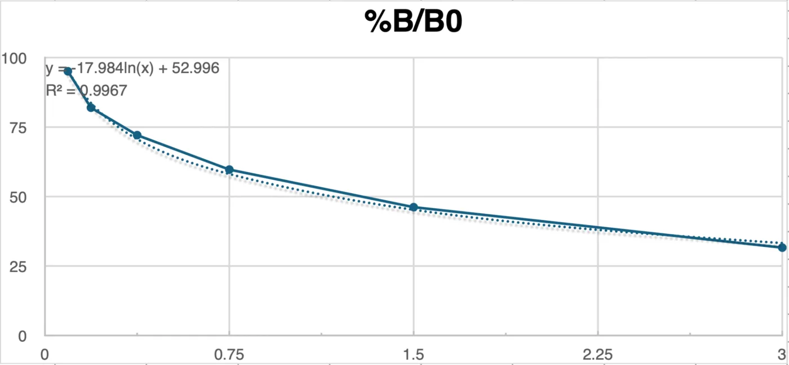
| Standard | Concentration | OD 1 | OD 2 | Mean OD | %B/B₀ | CV % |
|---|---|---|---|---|---|---|
| S1 | 3 | 0.369 | 0.342 | 0.356 | 31.6 | 5.4 |
| S2 | 1.5 | 0.529 | 0.505 | 0.517 | 46.2 | 3.3 |
| S3 | 0.75 | 0.691 | 0.643 | 0.667 | 59.7 | 5.1 |
| S4 | 0.375 | 0.824 | 0.785 | 0.805 | 72.1 | 3.4 |
| S5 | 0.187 | 0.919 | 0.909 | 0.914 | 82.0 | 0.8 |
| S6 | 0.093 | 1.094 | 1.025 | 1.060 | 95.1 | 4.6 |
%B/B₀ falls as concentration rises, which is the behaviour a competitive assay must show, and every duplicate agrees to within 6%. The limit is the span: the six standards cover 31.6 to 95.1% B/B₀, so any sample outside that band is extrapolated and the number attached to it is weaker than the curve's R² makes it look.
Results
| Trial | Sample | Dilution | Mean OD | %B/B₀ | In 20–80% | Apparent conc. | × dilution | Disparity % |
|---|---|---|---|---|---|---|---|---|
| I | ACCD | 1:1 | 0.119 | 10.3 | no | 14.4 | 14.4 | – |
| ACCD | 1:2 | 0.175 | 15.3 | no | 8.5 | 17.1 | 17.5 | |
| LEA14 | 1:1 | 0.243 | 21.5 | yes | 5.3 | 5.3 | – | |
| LEA14 | 1:2 | 0.355 | 31.6 | yes | 2.9 | 5.9 | 9.6 | |
| BoPep4 | 1:1 | 0.230 | 20.3 | yes | 5.8 | 5.8 | – | |
| BoPep4 | 1:2 | 0.395 | 35.1 | yes | 2.4 | 4.9 | 16.7 | |
| II | ACCD | 1:1 | 0.125 | 10.8 | no | 13.5 | 13.5 | – |
| ACCD | 1:2 | 0.161 | 14.1 | no | 9.6 | 19.1 | 34.3 | |
| LEA14 | 1:1 | 0.237 | 20.9 | yes | 5.5 | 5.5 | – | |
| LEA14 | 1:2 | 0.384 | 34.2 | yes | 2.6 | 5.1 | 7.6 | |
| BoPep4 | 1:1 | 0.256 | 22.6 | yes | 4.9 | 4.9 | – | |
| BoPep4 | 1:2 | 0.302 | 26.7 | yes | 3.8 | 7.7 | 43.1 |
LEA14 is what these plates measure properly, and it measures the same in both trials: all four dilutions sit inside the 20 to 80% band and each pair agrees to within 10%, giving about 5 µg/mL. The four ACCD wells all read below 20% B/B₀, which is off the bottom of the standards, so 13.5 to 19.1 µg/mL is an extrapolation and should be read as "higher than LEA14 and BoPep4" and not as a figure. One BoPep4 pair disagrees by 43% between its dilutions, which is the kit's own signal for interference and means that sample needs purifying and re-assaying.
| Side | Time (h) | OD | %B/B₀ | In 20–80% | Apparent conc. |
|---|---|---|---|---|---|
| Lumen | 1 | 0.204 | 17.9 | no | 6.9 |
| Lumen | 16 | 0.190 | 16.7 | no | 7.6 |
| Lumen | 24 | 0.231 | 20.4 | yes | 5.7 |
| Lumen | 40 | 0.283 | 25.1 | yes | 4.2 |
| Shell | 1 | 0.245 | 21.6 | yes | 5.3 |
| Shell | 16 | 0.198 | 17.4 | no | 7.2 |
| Shell | 24 | 0.225 | 19.8 | no | 6.0 |
| Shell | 40 | 0.251 | 22.2 | yes | 5.1 |
Samples were drawn from both the lumen and the shell compartment at matched times, so the pair at each point asks whether the protein is crossing the membrane wall rather than only accumulating where the cells are. Both sides peak at 16 hours and fall afterwards. That is a trend and not a result: each time point is one well with no technical replicate, and half the readings sit below the standard curve. The later anti-His runs on the October reactor batches, which do carry replicates, are reported on Results.
Three further sets, and why none of them settles anything
The same assay was run on three more groups of samples: a bioreactor time course, a panel of expression constructs and the red and green light cultures. They are reported here because they are the measurements we have, and each carries the same limitation: every well below is a single well, and almost all of them read below the lowest standard on the curve.
| Time, h | Mean OD | %B/B₀ | Estimated concentration |
|---|---|---|---|
| 1 | 0.515 | 24.37 | 4.794 |
| 6 | 0.577 | 28.27 | 3.748 |
| 12 | 0.446 | 20.03 | 6.522 |
| 18 | 0.464 | 21.16 | 5.993 |
| 24 | 0.607 | 30.16 | 3.353 |
| 30 | 0.473 | 21.73 | 5.752 |
The highest value falls at 12 hours, but the series does not rise or fall, it fluctuates: 12 and 30 hours are near the top and 6 and 24 hours near the bottom, with no trend between them. A second trial of the same experiment peaked at 24 hours instead. Single wells reading below the standard curve cannot distinguish a production curve from plate noise, and this one does not.
| Construct | Time, h | Mean OD | %B/B₀ | Concentration | OD600 | Per OD600 |
|---|---|---|---|---|---|---|
| Csn:LEA | 8 | 0.4525 | 20.44 | 6.323 | 0.528 | 11.975 |
| Csn:LEA | 12 | 0.4605 | 20.94 | 6.090 | 0.628 | 9.698 |
| Csn:ACCD | 8 | 0.3365 | 13.14 | 12.072 | 0.404 | 29.881 |
| Csn:ACCD | 12 | 0.3210 | 12.17 | 13.446 | 0.633 | 21.242 |
| BoPep4 | 8 | 0.4605 | 20.94 | 6.090 | 0.590 | 10.323 |
| BoPep4 | 12 | 0.5175 | 24.53 | 4.744 | 0.679 | 6.987 |
| BoPep4 2.1 | 8 | 0.4945 | 23.08 | 5.230 | 0.685 | 7.635 |
| BoPep4 2.1 | 12 | 0.4525 | 20.44 | 6.323 | 0.508 | 12.447 |
| BoPep4 2.2 | 8 | 0.4435 | 19.87 | 6.601 | 0.429 | 15.386 |
| BoPep4 2.2 | 12 | 0.4835 | 22.39 | 5.488 | 0.506 | 10.846 |
| WB800, control | 8 | 0.4850 | 22.48 | 5.452 | 0.453 | 12.035 |
| WB800, control | 12 | 0.5270 | 25.13 | 4.562 | 0.713 | 6.399 |
| AcdS 2.1 | 8 | 0.3755 | 15.60 | 9.458 | 0.484 | 19.540 |
| AcdS 2.1 | 12 | 0.4010 | 17.20 | 8.197 | 0.528 | 15.525 |
Csn:ACCD is highest at both times, raw and per OD600, and AcdS 2.1 is second. That ranking cannot be used, because of the row that makes the table worth publishing: the untransformed WB800 control reads 5.452 and 4.562 µg/mL, which is the same range as four of the six constructs. A negative control returning a signal comparable to the samples means the assay is reading something other than recombinant protein in these preparations, so no difference here can be attributed to expression.
| Light | Sample | Time, h | Mean OD | %B/B₀ | Estimated concentration |
|---|---|---|---|---|---|
| Red | 1 | 13 | 0.4775 | 22.01 | 11.479 |
| Red | 2 | 13 | 0.4705 | 21.57 | 12.144 |
| Green | 1 | 13 | 0.4560 | 20.66 | 12.415 |
| Green | 2 | 13 | 0.4485 | 20.19 | 13.398 |
| Red | 1 | 16 | 0.4715 | 21.64 | 11.794 |
| Red | 2 | 16 | 0.4650 | 21.23 | 12.453 |
| Green | 1 | 16 | 0.4660 | 21.29 | 11.852 |
| Green | 2 | 16 | 0.4515 | 20.38 | 13.208 |
At 13 hours both green samples read above both red ones, 12.4 and 13.4 against 11.5 and 12.1. At 16 hours the two conditions overlap completely. The spread within a condition, 11.5 to 12.5 for red at either time, is as large as the gap between conditions, so this does not show light-regulated expression; it shows that if there is a difference, this assay at this replication cannot resolve it. That is the same conclusion the optogenetic blots reach by a different route, and the two agree: the switch has not been demonstrated to work.
One thing this assay cannot do, whatever its precision: anti-His ELISA counts protein carrying a His tag. It says nothing about whether that protein folds or turns substrate over. Activity is what the DNPH assay in this section is for, and the two numbers should never be substituted for one another.
DNPH assay for ACC deaminase activity
To determine whether engineered Bacillus subtilis WB800 can produce and secrete active ACC deaminase, we measure the enzymatic cleavage of ACC into α-ketobutyrate and ammonia. The 2,4-dinitrophenylhydrazine (DNPH) assay reads the α-ketobutyrate directly.
Under acidic conditions DNPH reacts with the carbonyl group of α-ketobutyrate to form a hydrazone, which is made visible with alkali and quantified at 540 nm (Penrose & Glick, 2003; Kozaeva et al., 2022). The method answers the three objections to reading ammonium in our samples: the ACC substrate does not interfere, the background in a rich culture medium is far lower, and the assay is nineteen times more sensitive. That sensitivity is what makes initial velocities measurable and so puts true kinetic parameters, Km and kcat, within reach. Paired with growth and expression readouts, it tells us whether the enzyme leaving the cell is catalytically intact and not merely present.
What the measurement contributes
We scaled the conventional protocol of Penrose and Glick (2003) down twenty-fold while holding the reaction proportions, which moves the assay onto a 96-well microplate and makes screening a strain library practical. With it we compared ACC deaminase activity across constructs, tested what pyridoxal 5'-phosphate supplementation does to that activity, and checked that recombinant ACCD secreted by our engineered B. subtilis still functions outside the cell. We also set up the standard curve and the arithmetic that converts an absorbance into an α-ketobutyrate concentration, a total product yield and an activity, so the comparison between strains rests on a stated calculation.
Reagents and solutions DNPH in 2 N HCl, the PLP buffer, and the α-ketobutyrate standard
- DNPH solution, 0.2% w/v in 2 N HCl. Dissolve 0.20 g of 2,4-dinitrophenylhydrazine powder in 100 mL of 2 N HCl. Protect from light with aluminium foil and store at 4 °C. Handle the 2 N HCl with acid-resistant gloves and safety goggles, and work in a fume hood.
- Hydrochloric acid, 0.56 N. Dilute concentrated HCl (12 N) with ultrapure water. Used to quench the reaction and to stabilise the acid-catalyzed step.
- Sodium hydroxide, 2 N. Dissolve 8.0 g of NaOH pellets in deionized water to a total volume of 100 mL. The reaction is exothermic, so prepare it in an ice bath.
- ACC substrate, 0.5 M. Dissolve 50.55 mg ACC per 1.0 mL deionized water, store at −20 °C, and pre-equilibrate at 30 °C for at least 3 minutes before use.
- 20× reaction buffer. 1 M phosphate buffer pH 8.5 containing 250 µM PLP. Store at 4 °C away from light and use within two weeks.
- α-ketobutyrate primary standard, 10 mM. Dissolve 12.4 mg sodium 2-oxobutyrate (MW 124.7) per 10 mL water. Prepare on ice, fresh each day.
Procedure overnight at 30 °C, quench, colour, read at 540 nm
- Mix 100 µL of filtered culture supernatant with 12 µL of 20× reaction buffer and 10 µL of 0.5 M ACC substrate, giving a 122 µL reaction with a final ACC concentration of 41 mM. Incubate at 30 °C overnight.
- Transfer 10 µL of the reaction mixture into 50 µL of 0.56 N HCl in a 1.5 mL microtube and vortex immediately to precipitate the protein.
- Centrifuge at 12,000 ×g for 5 minutes at room temperature, then transfer 50 µL of the clear supernatant into a clean microtube.
- Dilute the α-ketobutyrate standard as in the table below.
- Prepare the standard: to 50 µL supernatant add 6 µL of 1 M phosphate buffer pH 8.5 with 250 µM PLP and 5 µL of diluted α-ketobutyrate.
- Add 40 µL of 0.56 N HCl and 15 µL of 0.2% DNPH in 2 N HCl, vortex, and incubate at 30 °C for 30 minutes.
- Add 100 µL of 2 N NaOH, vortex for 10 seconds, and transfer the whole 205 µL into a 96-well flat-bottom plate.
- Read the absorbance at 540 nm after 10 minutes.
| Diluted stock | Final in well | ddH₂O | Ketobutyrate added |
|---|---|---|---|
| 50 | 4.098 | 100 µL | 100 µL of 100 mM |
| 25 | 2.049 | 100 µL | 100 µL of 50 mM |
| 12.5 | 1.025 | 100 µL | 100 µL of 25 mM |
| 6.25 | 0.512 | 100 µL | 100 µL of 12.5 mM |
| 3.125 | 0.256 | 100 µL | 100 µL of 6.25 mM |
Calculation net absorbance, the standard curve, then total product
Net absorbance
Correct for background by subtracting the absorbance of the HCl sample blank from the DNPH-treated sample at the peak wavelength.
ΔA = Asample − Ablank
Standard curve interpolation
The linear regression of the standard curve, y = mx + b, rearranges to give the concentration, where m is the slope and b the y-intercept.
[α-ketobutyrate] (mM) = (ΔA − b) / m
Total product
Convert the concentration into accumulated product within the reaction volume Vreaction.
Total product (nmol) = [α-ketobutyrate] (mM) × Vreaction (µL)
PLP is what makes the enzyme work
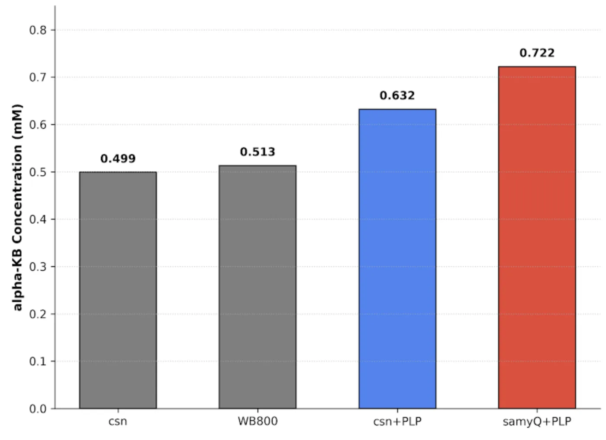
| Strain and condition | OD 540 | Total product | Net vs WB800 | Ketobutyrate | Net ketobutyrate |
|---|---|---|---|---|---|
| Csn | 0.386 | 57.9 | 0.0 | 0.499 | 0.000 |
| WB800 host | 0.388 | 59.7 | −1.8 | 0.513 | −0.014 |
| Csn + PLP | 0.404 | 73.4 | +13.7 | 0.632 | +0.119 |
| SamyQ + PLP | 0.423 | 89.7 | +30.0 | 0.722 | +0.209 |
Without added PLP, the Csn construct reads 0.499 mM against the WB800 host's 0.513 mM: the two are the same number, so whatever ACCD is present is turning over no faster than the host background. Adding the cofactor moves Csn to +13.7 nmol over that baseline, which is the clearest statement this page can make that ACCD does not function without PLP. That is why PLP is dosed alongside ACCD in every plant run, and why the reactor has to supply it too if the enzyme is to work in the field. SamyQ with PLP reaches 89.7 nmol, +30.0 over baseline, which is 2.19 times the net product of Csn with PLP, so the two secretion tags are not equivalent. Every value here is one well on one plate, so the ranking is a first result and not a measured fold difference.
The standard curve the concentrations are read from
Every α-ketobutyrate value on this page is read off the curve below, measured on the same plate as the samples it calibrates. Over 0 to 2.049 mM, after subtracting the reagent blank of 0.110 AU, absorbance at 540 nm is linear in α-ketobutyrate with a slope of 0.246 AU mM−1, an intercept of −0.005 AU and R² = 0.9995.
| Standard in well, mM | A540 | In the working range |
|---|---|---|
| 0 | 0.110 | yes, the blank |
| 0.256 | 0.161 | yes |
| 0.512 | 0.233 | yes |
| 1.025 | 0.355 | yes |
| 2.049 | 0.610 | yes |
| 4.096 | 0.673 | no, the response flattens |
| 8.192 | 1.196 | no |
| 16.384 | 1.682 | no |
The curve was also run twice, once in buffer and once in TB medium, because every sample on this page comes out of a TB culture and the medium itself absorbs.
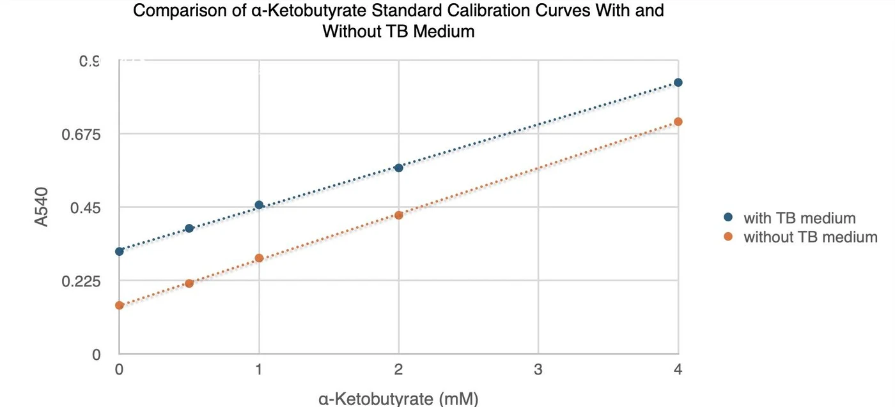
The two lines run parallel and offset. TB medium raises the absorbance at every point by about the same amount and leaves the slope, the response per millimolar, where it was. That is the behaviour of a constant background rather than an interference, so the correction is a blank made up in the same medium as the sample, and the calibration itself transfers. It is the check worth running before trusting any colorimetric assay on culture supernatant.
Fitting all eight levels at once returns R² = 0.950, which is the number to avoid quoting: it looks acceptable while hiding a curve that has stopped responding. The five levels at and below 2.049 mM are what the samples are read against, and every sample value on this page falls inside that range. This establishes that the DNPH assay itself works, and over what range, which is the precondition for anything the strain screen below says.
ACC deaminase activity across a bioreactor run
The assay was run again on supernatant drawn from the AcdS 2.1 constitutive ACC deaminase bioreactor run, at seven points between 1 and 36 hours. Activity is the α-ketobutyrate the sample produced divided by the length of the reaction, which was 12 hours for every point, so the figures below are the concentrations in the right-hand column divided by twelve.

| Sample, hours | Activity | Product, mM |
|---|---|---|
| 1 | -3.321 | -0.0399 |
| 6 | 2.779 | 0.0333 |
| 12 | 2.440 | 0.0293 |
| 18 | 30.907 | 0.3709 |
| 24 | 18.707 | 0.2245 |
| 30 | 10.912 | 0.1309 |
| 36 | 14.640 | 0.1757 |
Nothing is turning over for the first twelve hours. The 1 hour sample reads −3.3, which is the same artefact as L40 in the screen above: the sample absorbed less than its own blank, so it is not a measurement. The 6 and 12 hour points sit at 2.8 and 2.4, close enough to the floor that they say the enzyme is not yet working rather than how fast it is. Activity then jumps to 30.9 at 18 hours, which is the highest figure this assay has returned for reactor material, and falls back to between 11 and 15 for the rest of the run.
Two things keep this a trend and not a result. Every point is a single well, so the fall after 18 hours and the small rise at 36 are each one reading. And the peak does not reconcile with the other reactor figure the project holds: 30.9 nmol mL−1 h−1 is 0.52 mU/mL, against the 7.25 mU/mL read from the permeate on 7 and 8 October. The two differ fourteenfold, and the likely reason is the one already on this page: that figure came from a 30-minute reaction and these from 12-hour ones, over which the substrate depletes and the enzyme loses activity, so a long reaction averages down. Until the same sample is read both ways, neither number is a rate the project can quote.
Screening the strain library
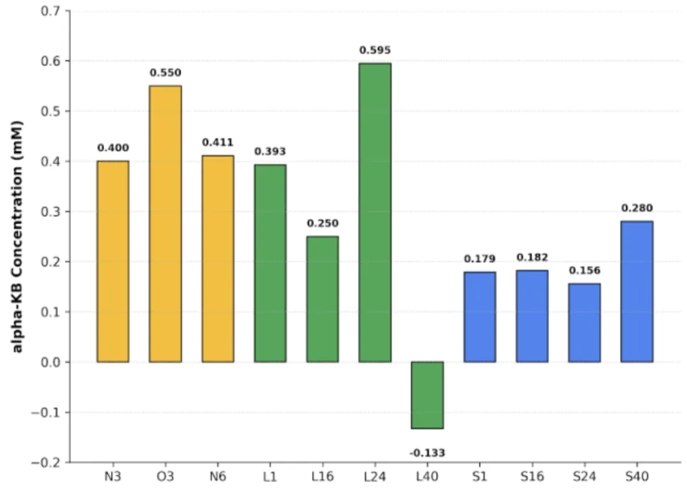
| Strain | OD 540 | ΔA | Ketobutyrate |
|---|---|---|---|
| N3 | 0.372 | 0.064 | 0.400 |
| O3 | 0.437 | 0.104 | 0.550 |
| N6 | 0.373 | 0.067 | 0.411 |
| O6 | 0.337 | −0.005 | 0.141 |
| L1 | 0.400 | 0.062 | 0.393 |
| L16 | 0.396 | 0.024 | 0.250 |
| L24 | 0.477 | 0.116 | 0.595 |
| L40 | 0.326 | −0.078 | −0.133 |
| S1 | 0.291 | 0.005 | 0.179 |
| S16 | 0.351 | 0.006 | 0.182 |
| S24 | 0.390 | −0.001 | 0.156 |
| S40 | 0.388 | 0.032 | 0.280 |
In the O group, O3 is the strongest construct on the plate after L24 at 0.550 mM, while O6 falls to 0.141 mM, near the floor. In the L group, L24 is the highest value anywhere in the screen at 0.595 mM and L1 follows at 0.393 mM; L16 sits in between at 0.250 mM. The S group accumulates less than either, with S40 its best at 0.280 mM and S1, S16 and S24 all close to the floor.
Three of the twelve wells carry a negative net absorbance, and L40 converts to a negative concentration of −0.133 mM. A negative α-ketobutyrate concentration is not a measurement; it means the sample absorbed less than its own blank, which substrate depletion, cofactor loss or a degraded colour reaction can each produce. Those wells mark the bottom of what this plate can resolve, and the floor sits somewhere near 0.15 mM rather than at zero. The whole screen is single wells at one time point, so what it supports is picking constructs to repeat, with L24 and O3 first.
This method is also what read the reactor permeate on 7 and 8 October, where it gave the only activity figure the project has for material coming out of the bioreactor, 7.25 mU/mL. Those readings are reported under the runs on Digital Twin and carried into the validation table on Development; like the plates here, each is a single sample.
For future projects
Most of what is above was built because nothing off the shelf answered the question in front of us. Each piece is written up so it can be lifted out of ReLEAF and used on a different organism, a different stress or a different instrument.
- Audit your own signal chain before you calibrate it. Our 434-hour culture had been recording the evidence of its own instrument bias for weeks. Any team logging a long time course can run the same check in an afternoon: plot the distribution of the reference channel and see whether readings land on whole sensor counts. If they do, the averaging step is not working and the curve carries steps that belong to the detector.
- Replay algorithms instead of switching them. Logging the individual samples inside a burst, and not only the value they reduce to, lets every reduction algorithm be compared on identical input. It is usually one flag in firmware. Our eleven-algorithm replay script and the line-for-line estimator ports take any raw burst file.
- Gate the reading, not the estimator. For any inline optical measurement in a circulating loop, the choice of robust estimator turned out to be worth under 0.004 OD, while a spread gate and a jump gate took the worst bubble error from 2.44 to 0.016 OD. Teams building flow-cell sensors can take the two gate rules directly.
- Calibrate turbidity against a particle that does not grow. The withdraw-one, add-one silica ladder gives a concentration axis defined by pipetted volumes rather than by another instrument, and it separates instrument bias from biology. It runs on any photometer and costs about 100 mg of 1 µm microspheres.
- Match cheap LEDs by measured output before trusting a light plate. Internal resistor variance makes nominally identical single-bulb LEDs deliver different doses. Our grouping method turns a bag of mismatched LEDs into columns that differ by a measured amount, and it works for any optogenetic system, not only CcaSR.
- Report chlorophyll both ways. Per-gram normalisation inflates the number when stress has suppressed biomass: in one heat assay the stressed group appeared to hold three times more chlorophyll per gram while total chlorophyll in the extract had fallen by about 91%. Reporting total alongside per-gram, and choosing between them on whether biomass is comparable, keeps that artefact out of the conclusion.
- Use the stress windows we found instead of rediscovering them. On agar, rescue is readable between 75 and 100 mM NaCl; 150 mM stunts and 250 mM bleaches past recovery. In hydroponic culture, 42 °C killed every group within a day and 37 °C left a window. TB medium carrying B. subtilis stressed Arabidopsis at every dilution down to 1/16, so protectant preparations have to be carried below that.
Three of these came out of a failure rather than a success. The bubble gate exists because an estimator we had argued about for weeks turned out not to matter; the chlorophyll recommendation exists because a per-gram number pointed the opposite way from the photographs; the TB dilution floor exists because a pretest found no concentration that plants tolerated. Each one is cheap to repeat and tells you something about your instrument or your assay before it tells you anything about your biology.
Conclusion
Could another team repeat these measurements?
Every chapter carries its own materials, its quantities per plate or per well, and its procedure in the order the steps are carried out, so each measurement can be rebuilt without reference to us. The runs that failed are reported beside the runs that worked, because a protocol that does not say how it stopped failing cannot be repeated: the 14 August pressure series does not reproduce from one run to the next, five of our eight pre-registered predictions about the photometer were overturned by our own data, and heat stress in hydroponic culture flattened the treated plants along with the controls. For the measurement that is wholly ours the raw material is published rather than described. The CSVs from both photometer builds, both bubble tests, the hand-written log sheet, the eleven-algorithm replay script, the line-for-line firmware ports and the pre-registration are in od600-signal-processing/ on the iGEM GitLab, and that protocol runs in four working days on any photometer that can be made to log the individual samples inside a burst. The limits are stated where they apply: the plant stress windows rest on one plate per group, and the reactor concentration and activity time courses on single wells.
Is the protocol well described?
Each block names its materials with the manufacturer and the catalogue or lot number where one exists, gives the amount needed per plate or per well, and then lists the steps. The arithmetic is described to the same depth as the bench work. The conversion from illuminance to optical density is given as equations, including the path-length factor of 5.0 that carries a 2 mm flow cuvette onto the 1 cm basis OD600 is quoted on, and the firmware that performs it is ported line for line into the analysis, so what is tested is what ships rather than a description of it. Image analysis is calibrated from a 150 mm ruler standing in every photograph, so the scale comes from an object in the frame instead of an assumed camera distance. Eleven problems that shaped the agar sets are tabulated with the set each appeared in and what we changed in response. No protocol on this page is offered as a separate file to download; each is written out in full where it is used.
Is it useful to other projects?
Each measurement block closes with what transfers out of ReLEAF. The central one is an in-line OD600 measurement that needs no instrument-specific transform fitted against a benchtop spectrophotometer: the raw output agrees with the benchtop reference to a median paired difference of 3.8%, and on the silica run its slope against that reference is 1.001, consistent with unit scale, so another team can rebuild the instrument and use the number it gives. Four further pieces are written for lifting out. The burst filter and the two acceptance gates took the worst bubble error from 2.44 to 0.016 OD and apply to any flow-cell sensor. The silica ladder calibrates a turbidity reading against a particle that does not grow, on a concentration axis set by pipetted volumes. The agar platform is a general screen for protectants and plant growth-promoting bacteria, with the usable stress window already found, 75 to 100 mM NaCl, so another team need not repeat the pretests. And chlorophyll is reported both per gram and in total, because per-gram normalisation inflates the number when stress has suppressed biomass, by a factor of three in one of our own heat assays while total chlorophyll had fallen by about 91%.
Were controls used to validate the process and calibrate the units?
Every optical reading here is referenced to a blank, and the blank is refused if either sensor is saturated, if too few readings survive the filter or if either channel reads zero, so the software returns no OD rather than an uncorrected one. The units are tied to physical quantities and not to another instrument: the path-length factor converts the flow cuvette to the conventional 1 cm basis, and the concentration axis of both calibration runs is set by weighed mass and pipetted volume. The instrument was then checked against two independent mass standards eight weeks apart, titanium dioxide on 23 August and 1 µm silica on 10 October, with a benchtop BioDrop reading in parallel at every step. Those comparisons are tested rather than asserted: against the reference the slope is 1.001, p = 0.98 against a null of unit slope, while the intercept is −0.123 OD, p = 0.005 against a null of zero, which locates the one remaining discrepancy in the stored blank and not in the optics. The flow meter was validated against outflow caught by hand over the same dials, R² = 0.995. In the assays the controls are a plate control on every set, equal liquid volumes in the untreated arms, an unstressed-plus-protectant arm to separate rescue from toxicity, blank-subtracted ELISA readings quoted as %B/B₀ against a standard curve with the coefficient of variation between replicate wells, and DNPH values taken net of the untransformed WB800 host background and read only over the five standard levels at and below 2.049 mM. Where a control defeated the measurement we report that as the result: the untransformed WB800 control returned 5.452 and 4.562 µg/mL in the ELISA, the same range as four of the six constructs beside it, so no difference in that table can be attributed to expression.
References
- Auverlot J, Reichheld J-P, Dard A. Assays to study plant response to high temperature in Arabidopsis: evidence in glutathione biosynthesis mutants. Methods in Molecular Biology. 2025:9-19. doi:10.1007/978-1-0716-4981-7_2
- Azadeh M, Gorovits B, Kamerud J, MacMannis S, Safavi A, Sailstad J, Sondag P. Calibration curves in quantitative ligand binding assays: recommendations and best practices for preparation, design, and editing of calibration curves. The AAPS Journal. 2018;20(1):22. doi:10.1208/s12248-017-0159-4
- Beyer HM, Juillot S, Herbst K, Samodelov SL, Mueller K, Schamel WW, Roemer W, Schaefer E, Timmer J, Zürbriggen MD, Weber W. Red light-regulated reversible nuclear localization of proteins in mammalian cells and zebrafish. ACS Synthetic Biology. 2015;4(9):951-958. doi:10.1021/acssynbio.5b00004
- Bird RB, Stewart WE, Lightfoot EN. Transport Phenomena. Revised 2nd ed. Wiley; 2007.
- Bugaj LJ, Lim WA. High-throughput multicolor optogenetics in microwell plates. Nature Protocols. 2019;14(7):2205-2228. doi:10.1038/s41596-019-0178-y
- Bornhorst JA, Falke JJ. Purification of proteins using polyhistidine affinity tags. Methods in Enzymology. 2000;326:245-254. doi:10.1016/s0076-6879(00)26058-8
- Castillo-Hair SM, Baerman EA, Fujita M, Igoshin OA, Tabor JJ. Optogenetic control of Bacillus subtilis gene expression. Nature Communications. 2019;10:3099. doi:10.1038/s41467-019-10906-6
- Ceusters J, Van De Poel B. Ethylene exerts species-specific and age-dependent control of photosynthesis. Plant Physiology. 2018;176(4):2601-2612. doi:10.1104/pp.17.01706
- Chatelle C, Ochoa-Fernandez R, Engesser R, Schneider N, Beyer HM, Jones AR, Timmer J, Zürbriggen MD, Weber W. A green-light-responsive system for the control of transgene expression in mammalian and plant cells. ACS Synthetic Biology. 2018;7(5):1349-1358. doi:10.1021/acssynbio.7b00450
- Cheng M-C, Liao P-M, Kuo W-W, Lin T-P. The Arabidopsis ETHYLENE RESPONSE FACTOR1 regulates abiotic stress-responsive gene expression by binding to different cis-acting elements in response to different stress signals. Plant Physiology. 2013;162(3):1566-1582. doi:10.1104/pp.113.221911
- Cortés-Jiménez D, Gómez-Guzmán A, Iturriaga G, Suárez R, Montero Alpírez G, Escalante FME. Microorganisms associated to tomato seedlings growing in saline culture act as osmoprotectant. Brazilian Journal of Microbiology. 2014;45(2):613-620. doi:10.1590/S1517-83822014000200032
- Corrales A, Carrillo L, Nebauer S, Renau-Morata B, Sánchez-Perales M, Fernández-Nohales P, Marqués J, Granell A, Pollmann S, Vicente-Carbajosa J, Molina R, Medina J. Salinity assay in Arabidopsis. Bio-protocol. 2014;4(16). doi:10.21769/bioprotoc.1216
- Fan Q, Jespersen D. Proteases and the ubiquitin-proteasome system: understanding protein degradation under heat stress in plants. Environmental and Experimental Botany. 2025;237:106174. doi:10.1016/j.envexpbot.2025.106174
- Field RW, Wu D, Howell JA, Gupta BB. Critical flux concept for microfiltration fouling. Journal of Membrane Science. 1995;100(3):259-272. doi:10.1016/0376-7388(94)00265-Z
- Gerhardt KP, Olson EJ, Castillo-Hair SM, Hartsough LA, Landry BP, Ekness F, Yokoo R, Gomez EJ, Ramakrishnan P, Suh J, Savage DF, Tabor JJ. An open-hardware platform for optogenetics and photobiology. Scientific Reports. 2016;6:35363. doi:10.1038/srep35363
- Glick BR. Bacteria with ACC deaminase can promote plant growth and help to feed the world. Microbiological Research. 2014;169(1):30-39. doi:10.1016/j.micres.2013.09.009
- Haller DJ, Castillo-Hair SM, Tabor JJ. Optogenetic control of B. subtilis gene expression using the CcaSR system. In: Baumschlager A, editor. Optogenetics: Methods and Protocols. Methods in Molecular Biology, vol 2840. New York: Humana; 2025. p. 1-17. doi:10.1007/978-1-0716-4047-0_1
- Hirose Y, Shimada T, Narikawa R, Katayama M, Ikeuchi M. Cyanobacteriochrome CcaS is the green light receptor that induces the expression of phycobilisome linker protein. Proceedings of the National Academy of Sciences. 2008;105(28):9528-9533. doi:10.1073/pnas.0801826105
- Honma M, Shimomura T. Metabolism of 1-aminocyclopropane-1-carboxylic acid. Agricultural and Biological Chemistry. 1978;42(10):1825-1831. doi:10.1271/bbb1961.42.1825
- Kainrath S, Stadler M, Reichhart E, Distel M, Janovjak H. Green-light-induced inactivation of receptor signaling using cobalamin-binding domains. Angewandte Chemie International Edition. 2017;56(16):4608-4611. doi:10.1002/anie.201611998
- Kennedy MJ, Hughes RM, Peteya LA, Schwartz JW, Ehlers MD, Tucker CL. Rapid blue-light-mediated induction of protein interactions in living cells. Nature Methods. 2010;7(12):973-975. doi:10.1038/nmeth.1524
- Kim K, Kyaw EP, Ramasamy K, Walitang DI, Rajasekaran R. ACC deaminase producing Methylobacterium oryzae CBMB20 and exogenous trehalose application alleviate salinity stress in Arabidopsis. Journal of Microbiology and Biotechnology. 2025;35:e2501007. doi:10.4014/jmb.2501.01007
- Kozaeva E, et al. DNPH quantification of α-ketobutyrate. 2022.
- Kumari R, Ashraf S, Bagri GK, Bagdi DL. Extraction and estimation of chlorophyll content of seed treated lentil crop using DMSO and acetone. Journal of Pharmacognosy and Phytochemistry. 2018;7(5):249-250.
- Kumar Parida A, Das AB, Mitra B, Mohanty P. Salt-stress induced alterations in protein profile and protease activity in the mangrove Bruguiera parviflora. Zeitschrift für Naturforschung C. 2004;59c:408-414.
- Lee JH, Burdick LH, Piatkowski B, Carrell AA, Doktycz MJ, Pelletier DA, Weston DJ. A rapid assay for assessing bacterial effects on Arabidopsis thermotolerance. Plant Methods. 2023;19(1):63. doi:10.1186/s13007-023-01022-0
- Li X, Zhang W, Niu D, Liu X. Effects of abiotic stress on chlorophyll metabolism. Plant Science. 2024;342:112030. doi:10.1016/j.plantsci.2024.112030
- Levskaya A, Weiner OD, Lim WA, Voigt CA. Spatiotemporal control of cell signalling using a light-switchable protein interaction. Nature. 2009;461(7266):997-1001. doi:10.1038/nature08446
- Li R, Liu M, Hu X, Li J, Pang Q, Yan X, Li J, Ji W. Broccoli plant elicitor peptide BoPep4 enhances plant salt tolerance by improving glucosinolate metabolism. Plant Science. 2026;364:112954. doi:10.1016/j.plantsci.2025.112954
- Liu H, Chen G-H, Sun J-J, Chen S, Fang Y, Ren J-H. Isolation, characterization, and tea growth-promoting analysis of JW-CZ2, a bacterium with 1-aminocyclopropane-1-carboxylic acid deaminase activity isolated from the rhizosphere soils of tea plants. Frontiers in Microbiology. 2022;13:792876. doi:10.3389/fmicb.2022.792876
- Millipore Corporation. Protein concentration and diafiltration by tangential flow filtration. Technical Brief TB032, Rev. C. 2003.
- Morales M, Munné-Bosch S. Malondialdehyde: facts and artifacts. Plant Physiology. 2019;180(3):1246-1250. doi:10.1104/pp.19.00405
- Motta-Mena LB, Reade A, Mallory MJ, Glantz S, Weiner OD, Lynch KW, Gardner KH. An optogenetic gene expression system with rapid activation and deactivation kinetics. Nature Chemical Biology. 2014;10(3):196-202. doi:10.1038/nchembio.1430
- Multamäki E, García de Fuentes A, Sieryi O, Bykov A, Gerken U, Ranzani AT, Köhler J, Meglinski I, Möglich A, Takala H. Optogenetic control of bacterial expression by red light. ACS Synthetic Biology. 2022;11(10):3354-3367. doi:10.1021/acssynbio.2c00259
- Murashige T, Skoog F. A revised medium for rapid growth and bio assays with tobacco tissue cultures. Physiologia Plantarum. 1962;15(3):473-497.
- Noya R, Murakoshi K, Ishida S, Tsuji Y, Kitani S, Nihira T, Arakawa K. Light inducible gene expression system for Streptomyces. Scientific Reports. 2024;14:25852. doi:10.1038/s41598-024-76860-6
- Ohlendorf R, Vidavski RR, Eldar A, Moffat K, Möglich A. From dusk till dawn: one-plasmid systems for light-regulated gene expression. Journal of Molecular Biology. 2012;416(4):534-542. doi:10.1016/j.jmb.2012.01.001
- Ong NT, Olson EJ, Tabor JJ. Engineering an E. coli near-infrared light sensor. ACS Synthetic Biology. 2017;6(11):2171-2175. doi:10.1021/acssynbio.7b00289
- Penrose DM, Glick BR. Methods for isolating and characterizing ACC deaminase-containing plant growth-promoting rhizobacteria. Physiologia Plantarum. 2003;118(1):10-15. doi:10.1034/j.1399-3054.2003.00086.x
- Ramakrishnan P, Tabor JJ. Repurposing Synechocystis PCC6803 UirS-UirR as a UV-violet/green photoreversible transcriptional regulatory tool in E. coli. ACS Synthetic Biology. 2016;5(7):733-740. doi:10.1021/acssynbio.6b00068
- Roberts J. The role of chlorophyll in photosynthesis and plant growth. American Journal of Biological Sciences. 2023;4(2):6-10. doi:10.71465/ajbs2191
- Rolly NK, Imran QM, Lee I-J, Yun B-W. Salinity stress-mediated suppression of expression of salt overly sensitive signaling pathway genes suggests negative regulation by AtbZIP62 transcription factor in Arabidopsis thaliana. International Journal of Molecular Sciences. 2020;21(5):1726. doi:10.3390/ijms21051726
- Sahoo S, Verma RK, Suresh AK, Rao KK, Bellare J, Suraishkumar GK. Macro-level and genetic-level responses of Bacillus subtilis to shear stress. Biotechnology Progress. 2003;19(6):1689-1696. doi:10.1021/bp034191w
- Růžička K, Ljung K, Vanneste S, Podhorská R, Beeckman T, Friml J, Benková E. Ethylene regulates root growth through effects on auxin biosynthesis and transport-dependent auxin distribution. The Plant Cell. 2007;19(7):2197-2212. doi:10.1105/tpc.107.052126
- Schluepmann H, et al. Trehalose-6-phosphate and growth arrest in Arabidopsis. 2004.
- Thibodeaux CJ, Liu H-W. Mechanistic studies of 1-aminocyclopropane-1-carboxylate deaminase: characterization of an unusual pyridoxal 5'-phosphate-dependent reaction. Biochemistry. 2011;50(11):1950-1962. doi:10.1021/bi101927s
- Wittig C, Wagner M, Vallon R, Crouzier T, van der Wijngaart W, Horn H, Bagheri S. The role of fluid friction in streamer formation and biofilm growth. npj Biofilms and Microbiomes. 2025;11(1):17. doi:10.1038/s41522-024-00633-2
- Yuen P. The science of selection: choosing the right hollow fiber filter [white paper]. Repligen; 2025.
- Zhang Z, Huang R. Analysis of malondialdehyde, chlorophyll, proline, soluble sugar, and glutathione content in Arabidopsis seedling. Bio-protocol. 2013;3(14). doi:10.21769/bioprotoc.817
- Zou Y, Zhang Y, Testerink C. Root dynamic growth strategies in response to salinity. Plant, Cell & Environment. 2021;45(3):695-704. doi:10.1111/pce.14205
Three entries carry only the author and year: Kozaeva et al. (2022), Schluepmann et al. (2004) and Yu et al. (2021). Their full details are still to be filled in by the authors of each block.